Computations of the Riemann zeta function
This page sorted by the size of $t$
This page sorted by the size of $Z(t)$
This page sorted by the size of $S(t)$
Here are some pictures of and information about $Z(t)$
and $S(t)$ for some large values of $t$. The $Z$ function is the zeta function on the critical line, rotated
so that it is real, so
/[
Z(t) = e^{i Arg(zeta(1/2 + it)} \zeta(1/2 + it)
/]
$S(t)$ is
the argument of $\zeta(1/2 + it)$, properly interpreted. In some way, it measures irregularity in the distribution
of the zeros of the zeta function.
These are from computations run by Ghaith Hiary and myself, based on the algorithm described
in Ghaith's paper (also available
at the arXiv).
These computations have been run on a variety of machines. Initially, we used machines on the Sage cluster
at the University of Washington (thanks to William Stein and the NSF), then later the riemann cluster
at University of Waterloo (thanks to Mike Rubinstein). Currently, computations are being run at the
University of Bristol on the LMFDB machines (funded by
EPSRC) and on
BlueCrystal.
If your web browser window is big enough, in the top right of each section below you will
see a plot of Z(t), in the bottom left you will see S(t), and in the bottom right you will see
a zoomed in plot of Z(t). Things are sized roughly so that this looks good on my 1080p monitor.
The images are all links that will take you to a zoomable version of the plot.
You can click on any image for a bigger version. Also, you can look at a list of all of the images:
Z(t) or S(t).
If you like this, you might also enjoy:
-
Slides (with some typos and bad mistake)
from a talk I gave on this stuff at MSRI in April 2011. Paper coming one day.
-
The LMFDB, which should contain this data some day.
$\zeta(1/2 + it)$ around $t = 81029194732694548890047854481676693 \approx 8.10291947327 \times 10^{ 34 }$
Largest value of $Z(t)$ in this graph:-74.53459566
Value of $t$ for which the maximum occurs:81029194732694548890047854481676731.95499609
Value of $\zeta(1/2 + it)$:$73.4530083 + 12.65154231i$
Maximum of $S(t)$ in this range:1.823324507
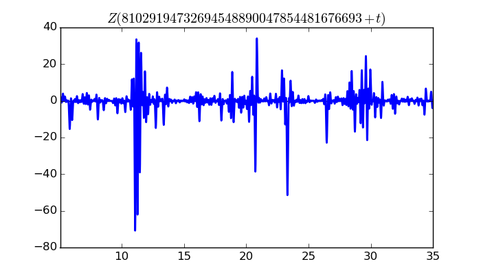


$\zeta(1/2 + it)$ around $t = 100680825704530917482910609550376 \approx 1.00680825705 \times 10^{ 32 }$
Largest value of $Z(t)$ in this graph:87.6931391
Value of $t$ for which the maximum occurs:100680825704530917482910609550397.99045703
Value of $\zeta(1/2 + it)$:$86.22016275 + 16.00531722i$
Maximum of $S(t)$ in this range:-1.776520755


$\zeta(1/2 + it)$ around $t = 88837796029624663862630219091085 \approx 8.88377960296 \times 10^{ 31 }$
Largest value of $Z(t)$ in this graph:115.411209
Value of $t$ for which the maximum occurs:88837796029624663862630219091092.457996094
Value of $\zeta(1/2 + it)$:$110.737055 + 32.51233332i$
Maximum of $S(t)$ in this range:-2.140833986
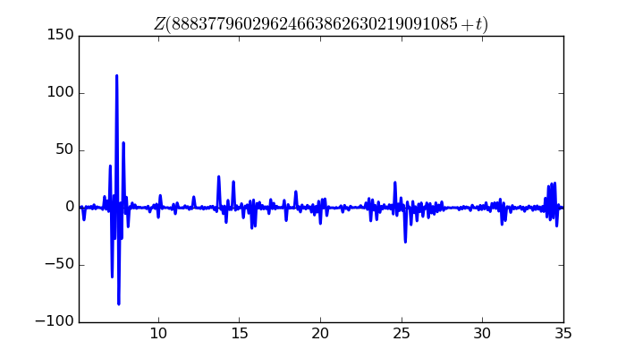


$\zeta(1/2 + it)$ around $t = 70391066310491324308791969554433 \approx 7.03910663105 \times 10^{ 31 }$
Largest value of $Z(t)$ in this graph:-14055.89286
Value of $t$ for which the maximum occurs:70391066310491324308791969554453.24909766
Value of $\zeta(1/2 + it)$:$12667.14879 - 6091.918058i$
Maximum of $S(t)$ in this range:-2.859244495


$\zeta(1/2 + it)$ around $t = 50054757231073962115880454671597 \approx 5.00547572311 \times 10^{ 31 }$
Largest value of $Z(t)$ in this graph:-10621.06098
Value of $t$ for which the maximum occurs:50054757231073962115880454671617.40199609
Value of $\zeta(1/2 + it)$:$8576.833992 - 6264.571422i$
Maximum of $S(t)$ in this range:-3.182607099


$\zeta(1/2 + it)$ around $t = 50054757231073962115880454671597 \approx 5.00547572311 \times 10^{ 31 }$
Largest value of $Z(t)$ in this graph:-10621.06098
Value of $t$ for which the maximum occurs:50054757231073962115880454671617.40199609
Value of $\zeta(1/2 + it)$:$8576.833988 - 6264.571419i$
Maximum of $S(t)$ in this range:-3.182602174
$\zeta(1/2 + it)$ around $t = 49520025290946288154611183520272 \approx 4.95200252909 \times 10^{ 31 }$
Largest value of $Z(t)$ in this graph:9315.27188
Value of $t$ for which the maximum occurs:49520025290946288154611183520292.95799609
Value of $\zeta(1/2 + it)$:$7876.239776 + 4973.845311i$
Maximum of $S(t)$ in this range:2.78624934


$\zeta(1/2 + it)$ around $t = 45890014847929271884961558864608 \approx 4.58900148479 \times 10^{ 31 }$
Largest value of $Z(t)$ in this graph:9976.374168
Value of $t$ for which the maximum occurs:45890014847929271884961558864628.19499609
Value of $\zeta(1/2 + it)$:$9319.982778 - 3558.927165i$
Maximum of $S(t)$ in this range:2.963500752

$\zeta(1/2 + it)$ around $t = 39246764589894309155251169284084 \approx 3.92467645899 \times 10^{ 31 }$
Largest value of $Z(t)$ in this graph:16242.95904
Value of $t$ for which the maximum occurs:39246764589894309155251169284104.05199609
Value of $\zeta(1/2 + it)$:$15837.87126 + 3604.934452i$
Maximum of $S(t)$ in this range:3.169461021
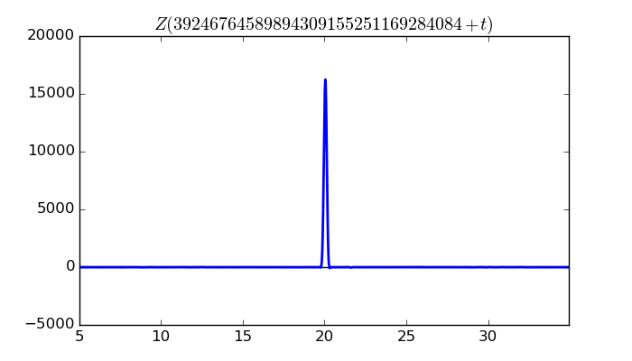


$\zeta(1/2 + it)$ around $t = 35575860004214706249227248805957 \approx 3.55758600042 \times 10^{ 31 }$
Largest value of $Z(t)$ in this graph:13338.68756
Value of $t$ for which the maximum occurs:35575860004214706249227248805977.24128516
Value of $\zeta(1/2 + it)$:$8299.344119 + 10442.29251i$
Maximum of $S(t)$ in this range:3.272254487


$\zeta(1/2 + it)$ around $t = 31347787742229096277432756610015 \approx 3.13477877422 \times 10^{ 31 }$
Largest value of $Z(t)$ in this graph:8076.238593
Value of $t$ for which the maximum occurs:31347787742229096277432756610035.14299609
Value of $\zeta(1/2 + it)$:$7678.805476 + 2502.314182i$
Maximum of $S(t)$ in this range:2.721575524


$\zeta(1/2 + it)$ around $t = 24810931398446636379199989997454 \approx 2.48109313984 \times 10^{ 31 }$
Largest value of $Z(t)$ in this graph:8137.34897
Value of $t$ for which the maximum occurs:24810931398446636379199989997474.60347266
Value of $\zeta(1/2 + it)$:$7545.194594 + 3047.373755i$
Maximum of $S(t)$ in this range:-2.792163763


$\zeta(1/2 + it)$ around $t = 21717854100558504037806835050258 \approx 2.17178541006 \times 10^{ 31 }$
Largest value of $Z(t)$ in this graph:-5455.903783
Value of $t$ for which the maximum occurs:21717854100558504037806835050260.081472656
Value of $\zeta(1/2 + it)$:$5426.020668 - 570.2506482i$
Maximum of $S(t)$ in this range:-2.634282156


$\zeta(1/2 + it)$ around $t = 16846979183278761037318402004897 \approx 1.68469791833 \times 10^{ 31 }$
Largest value of $Z(t)$ in this graph:7183.450575
Value of $t$ for which the maximum occurs:16846979183278761037318402004917.09942578
Value of $\zeta(1/2 + it)$:$2614.894736 + 6690.611906i$
Maximum of $S(t)$ in this range:2.943639723

 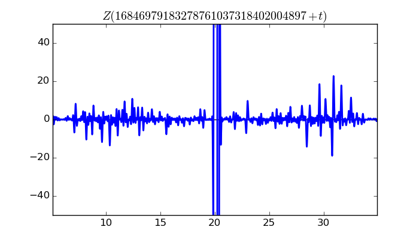
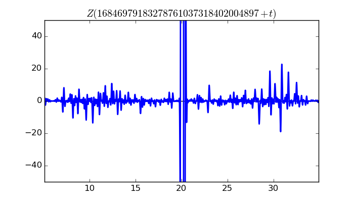
$\zeta(1/2 + it)$ around $t = 16842706493124197991442891753786 \approx 1.68427064931 \times 10^{ 31 }$
Largest value of $Z(t)$ in this graph:-120.5823824
Value of $t$ for which the maximum occurs:16842706493124197991442891753807.13999609
Value of $\zeta(1/2 + it)$:$-22.27758474 - 118.5066249i$
Maximum of $S(t)$ in this range:2.029335594


$\zeta(1/2 + it)$ around $t = 14963047608632064952545301782115 \approx 1.49630476086 \times 10^{ 31 }$
Largest value of $Z(t)$ in this graph:3527.426658
Value of $t$ for which the maximum occurs:14963047608632064952545301782135.45299609
Value of $\zeta(1/2 + it)$:$2853.497409 - 2073.714388i$
Maximum of $S(t)$ in this range:2.376010568

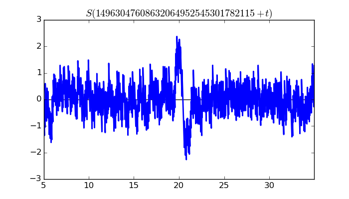
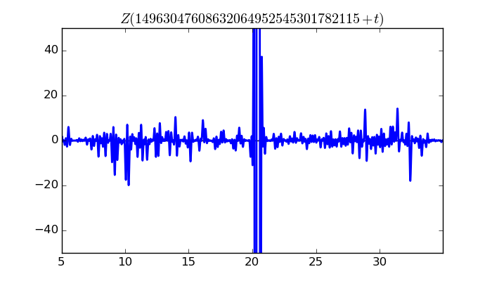
$\zeta(1/2 + it)$ around $t = 14729693642446783835401277340543 \approx 1.47296936424 \times 10^{ 31 }$
Largest value of $Z(t)$ in this graph:-7713.032785
Value of $t$ for which the maximum occurs:14729693642446783835401277340563.86799609
Value of $\zeta(1/2 + it)$:$6623.452734 - 3952.309279i$
Maximum of $S(t)$ in this range:-2.798033389


$\zeta(1/2 + it)$ around $t = 13036589919442157190082573984513 \approx 1.30365899194 \times 10^{ 31 }$
Largest value of $Z(t)$ in this graph:6175.066008
Value of $t$ for which the maximum occurs:13036589919442157190082573984533.98030078
Value of $\zeta(1/2 + it)$:$1152.530548 - 6066.556976i$
Maximum of $S(t)$ in this range:2.871716171


$\zeta(1/2 + it)$ around $t = 13018604908923222386363079300912 \approx 1.30186049089 \times 10^{ 31 }$
Largest value of $Z(t)$ in this graph:-8776.261814
Value of $t$ for which the maximum occurs:13018604908923222386363079300932.93299609
Value of $\zeta(1/2 + it)$:$7256.348641 - 4936.413254i$
Maximum of $S(t)$ in this range:3.015354651


$\zeta(1/2 + it)$ around $t = 9832284408046499500622869540111 \approx 9.83228440805 \times 10^{ 30 }$
Largest value of $Z(t)$ in this graph:-10137.11421
Value of $t$ for which the maximum occurs:9832284408046499500622869540131.74599609
Value of $\zeta(1/2 + it)$:$10097.50605 - 895.2407846i$
Maximum of $S(t)$ in this range:-2.881891872


$\zeta(1/2 + it)$ around $t = 9178358656494989336431259004785 \approx 9.17835865649 \times 10^{ 30 }$
Largest value of $Z(t)$ in this graph:89.10334759
Value of $t$ for which the maximum occurs:9178358656494989336431259004813.13432422
Value of $\zeta(1/2 + it)$:$88.02846135 - 13.79842543i$
Maximum of $S(t)$ in this range:-1.72348387


$\zeta(1/2 + it)$ around $t = 6632378187823588974002457910686 \approx 6.63237818782 \times 10^{ 30 }$
Largest value of $Z(t)$ in this graph:12021.09404
Value of $t$ for which the maximum occurs:6632378187823588974002457910706.59637891
Value of $\zeta(1/2 + it)$:$11940.69306 - 1388.002644i$
Maximum of $S(t)$ in this range:2.812395579

$\zeta(1/2 + it)$ around $t = 6083028695276545807063248346835 \approx 6.08302869528 \times 10^{ 30 }$
Largest value of $Z(t)$ in this graph:9739.335524
Value of $t$ for which the maximum occurs:6083028695276545807063248346855.90626953
Value of $\zeta(1/2 + it)$:$9646.371908 - 1342.447564i$
Maximum of $S(t)$ in this range:-2.992678907
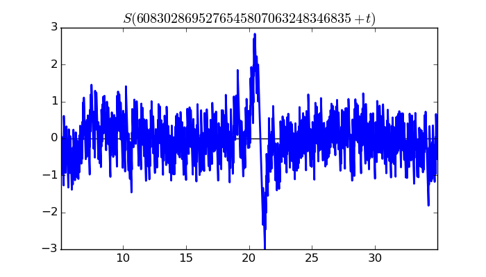

$\zeta(1/2 + it)$ around $t = 5866392475614912729251488020197 \approx 5.86639247561 \times 10^{ 30 }$
Largest value of $Z(t)$ in this graph:-4423.29945
Value of $t$ for which the maximum occurs:5866392475614912729251488020217.85599609
Value of $\zeta(1/2 + it)$:$1510.595869 - 4157.364327i$
Maximum of $S(t)$ in this range:-2.713054828


$\zeta(1/2 + it)$ around $t = 4051424673556972085158532092501 \approx 4.05142467356 \times 10^{ 30 }$
Largest value of $Z(t)$ in this graph:1808.875889
Value of $t$ for which the maximum occurs:4051424673556972085158532092521.90899609
Value of $\zeta(1/2 + it)$:$990.9912509 - 1513.264128i$
Maximum of $S(t)$ in this range:-2.816553916


$\zeta(1/2 + it)$ around $t = 3962231703483297661331732963213 \approx 3.96223170348 \times 10^{ 30 }$
Largest value of $Z(t)$ in this graph:-7484.299572
Value of $t$ for which the maximum occurs:3962231703483297661331732963233.07137109
Value of $\zeta(1/2 + it)$:$6553.017273 - 3615.619546i$
Maximum of $S(t)$ in this range:-2.73733147
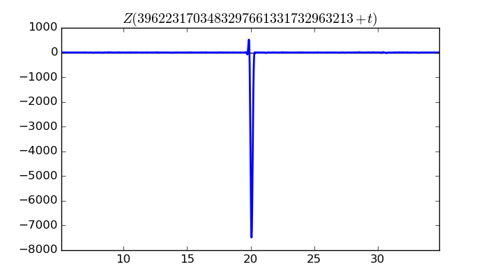


$\zeta(1/2 + it)$ around $t = 3805475614378624044873696329590 \approx 3.80547561438 \times 10^{ 30 }$
Largest value of $Z(t)$ in this graph:4548.845784
Value of $t$ for which the maximum occurs:3805475614378624044873696329610.07149609
Value of $\zeta(1/2 + it)$:$3262.806677 - 3169.556838i$
Maximum of $S(t)$ in this range:2.814192511

 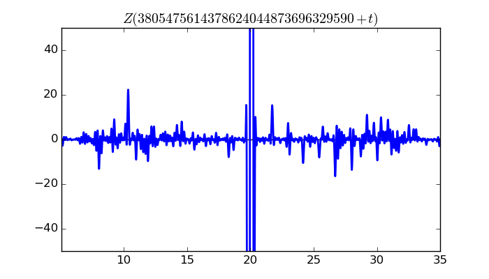
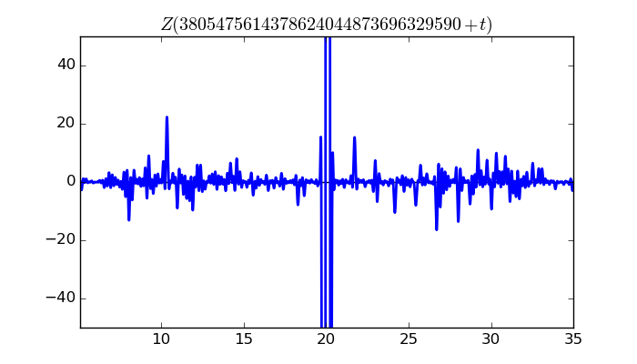
$\zeta(1/2 + it)$ around $t = 3746873807855083274300801372785 \approx 3.74687380786 \times 10^{ 30 }$
Largest value of $Z(t)$ in this graph:-3600.809016
Value of $t$ for which the maximum occurs:3746873807855083274300801372805.47503516
Value of $\zeta(1/2 + it)$:$2037.143416 + 2969.15346i$
Maximum of $S(t)$ in this range:-2.63778651


$\zeta(1/2 + it)$ around $t = 3260615873269180792527357738396 \approx 3.26061587327 \times 10^{ 30 }$
Largest value of $Z(t)$ in this graph:-274.1037064
Value of $t$ for which the maximum occurs:3260615873269180792527357738416.28599609
Value of $\zeta(1/2 + it)$:$273.3937962 - 19.71481739i$
Maximum of $S(t)$ in this range:-1.622825415

$\zeta(1/2 + it)$ around $t = 2409972808744819410276834556260 \approx 2.40997280874 \times 10^{ 30 }$
Largest value of $Z(t)$ in this graph:-9268.208332
Value of $t$ for which the maximum occurs:2409972808744819410276834556280.21999609
Value of $\zeta(1/2 + it)$:$8950.064468 - 2407.494905i$
Maximum of $S(t)$ in this range:-2.587162053
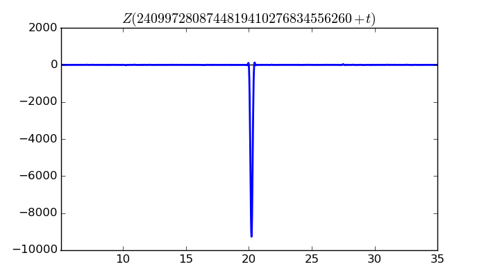


$\zeta(1/2 + it)$ around $t = 1907915287180786223131860607177 \approx 1.90791528718 \times 10^{ 30 }$
Largest value of $Z(t)$ in this graph:10251.5994
Value of $t$ for which the maximum occurs:1907915287180786223131860607197.54635547
Value of $\zeta(1/2 + it)$:$10042.31913 + 2060.8534i$
Maximum of $S(t)$ in this range:2.616803341

$\zeta(1/2 + it)$ around $t = 1815914128987815940610890018924 \approx 1.81591412899 \times 10^{ 30 }$
Largest value of $Z(t)$ in this graph:2449.122035
Value of $t$ for which the maximum occurs:1815914128987815940610890018926.203261719
Value of $\zeta(1/2 + it)$:$2449.113516 - 6.459476615i$
Maximum of $S(t)$ in this range:-2.574496557


$\zeta(1/2 + it)$ around $t = 1500000000000000000000000011000 \approx 1.5 \times 10^{ 30 }$
Largest value of $Z(t)$ in this graph:110.9150688
Value of $t$ for which the maximum occurs:1500000000000000000000000011037.00548828
Value of $\zeta(1/2 + it)$:$61.88489203 - 92.04570938i$
Maximum of $S(t)$ in this range:-1.698102341


$\zeta(1/2 + it)$ around $t = 1500000000000000000000000010000 \approx 1.5 \times 10^{ 30 }$
Largest value of $Z(t)$ in this graph:-89.53223914
Value of $t$ for which the maximum occurs:1500000000000000000000000010025.34599609
Value of $\zeta(1/2 + it)$:$58.41850624 + 67.84762321i$
Maximum of $S(t)$ in this range:-1.850515438
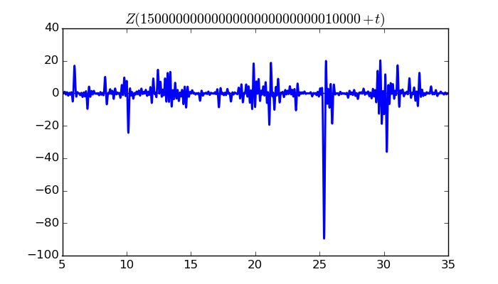
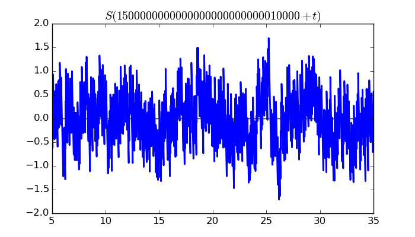

$\zeta(1/2 + it)$ around $t = 1500000000000000000000000009000 \approx 1.5 \times 10^{ 30 }$
Largest value of $Z(t)$ in this graph:-56.37121679
Value of $t$ for which the maximum occurs:1500000000000000000000000009005.470152344
Value of $\zeta(1/2 + it)$:$30.68764709 + 47.28617556i$
Maximum of $S(t)$ in this range:-2.095509276

 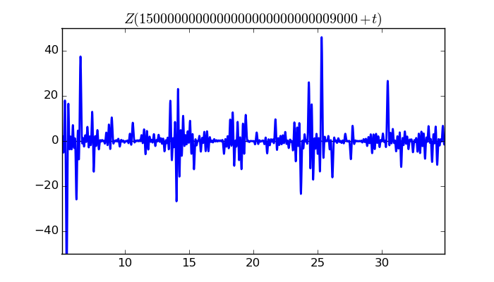
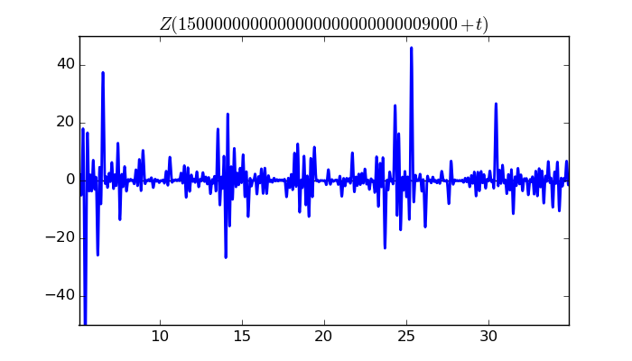
$\zeta(1/2 + it)$ around $t = 1500000000000000000000000008000 \approx 1.5 \times 10^{ 30 }$
Largest value of $Z(t)$ in this graph:49.11443688
Value of $t$ for which the maximum occurs:1500000000000000000000000008017.85841797
Value of $\zeta(1/2 + it)$:$49.11291039 + 0.3872244136i$
Maximum of $S(t)$ in this range:2.201216992
$\zeta(1/2 + it)$ around $t = 1500000000000000000000000007000 \approx 1.5 \times 10^{ 30 }$
Largest value of $Z(t)$ in this graph:77.47630093
Value of $t$ for which the maximum occurs:1500000000000000000000000007011.75799609
Value of $\zeta(1/2 + it)$:$52.77802062 - 56.7191127i$
Maximum of $S(t)$ in this range:-1.818069505


$\zeta(1/2 + it)$ around $t = 1500000000000000000000000006000 \approx 1.5 \times 10^{ 30 }$
Largest value of $Z(t)$ in this graph:-93.45643877
Value of $t$ for which the maximum occurs:1500000000000000000000000006004.912996094
Value of $\zeta(1/2 + it)$:$2.712997012 + 93.41705195i$
Maximum of $S(t)$ in this range:1.815837758

$\zeta(1/2 + it)$ around $t = 1500000000000000000000000005000 \approx 1.5 \times 10^{ 30 }$
Largest value of $Z(t)$ in this graph:-56.48299812
Value of $t$ for which the maximum occurs:1500000000000000000000000005035.98626172
Value of $\zeta(1/2 + it)$:$56.43803979 + 2.25316255i$
Maximum of $S(t)$ in this range:1.914417045


$\zeta(1/2 + it)$ around $t = 1500000000000000000000000004000 \approx 1.5 \times 10^{ 30 }$
Largest value of $Z(t)$ in this graph:-40.05598487
Value of $t$ for which the maximum occurs:1500000000000000000000000004020.38743359
Value of $\zeta(1/2 + it)$:$40.03948266 + 1.149674975i$
Maximum of $S(t)$ in this range:-1.715186207
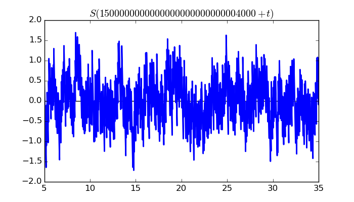

$\zeta(1/2 + it)$ around $t = 1500000000000000000000000003000 \approx 1.5 \times 10^{ 30 }$
Largest value of $Z(t)$ in this graph:58.92508758
Value of $t$ for which the maximum occurs:1500000000000000000000000003013.39599609
Value of $\zeta(1/2 + it)$:$28.72706915 + 51.44824044i$
Maximum of $S(t)$ in this range:1.920177045

 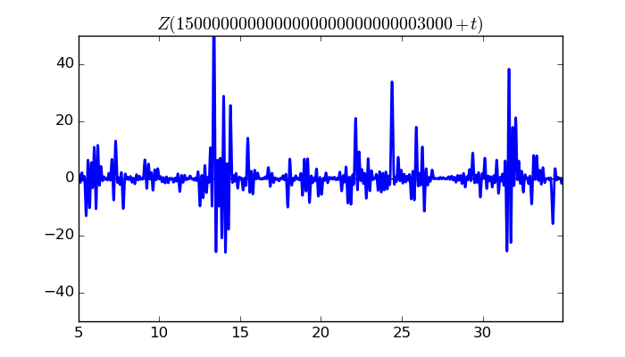
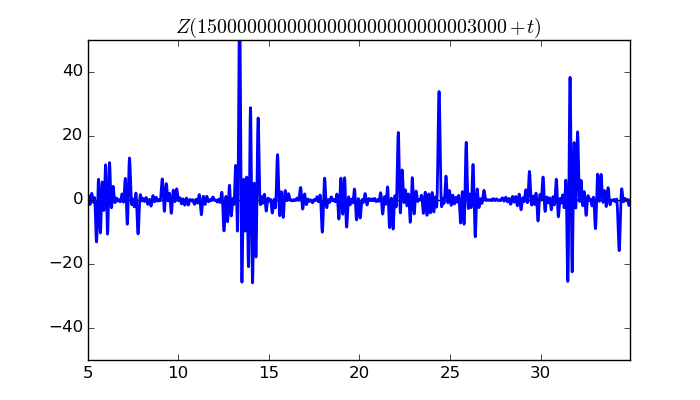
$\zeta(1/2 + it)$ around $t = 1500000000000000000000000002000 \approx 1.5 \times 10^{ 30 }$
Largest value of $Z(t)$ in this graph:249.404057
Value of $t$ for which the maximum occurs:1500000000000000000000000002007.088996094
Value of $\zeta(1/2 + it)$:$147.878016 + 200.8344493i$
Maximum of $S(t)$ in this range:1.858733602
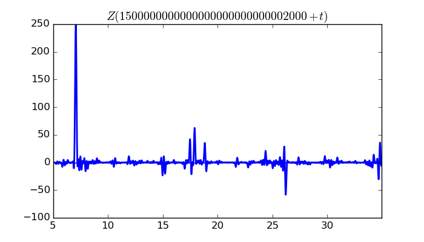


$\zeta(1/2 + it)$ around $t = 1500000000000000000000000001000 \approx 1.5 \times 10^{ 30 }$
Largest value of $Z(t)$ in this graph:-82.82322625
Value of $t$ for which the maximum occurs:1500000000000000000000000001029.30549609
Value of $\zeta(1/2 + it)$:$70.97317311 + 42.69069576i$
Maximum of $S(t)$ in this range:1.922620206


$\zeta(1/2 + it)$ around $t = 1500000000000000000000000000000 \approx 1.5 \times 10^{ 30 }$
Largest value of $Z(t)$ in this graph:97.26948693
Value of $t$ for which the maximum occurs:1500000000000000000000000000016.25019922
Value of $\zeta(1/2 + it)$:$75.91258094 - 60.81638875i$
Maximum of $S(t)$ in this range:-1.843742121

 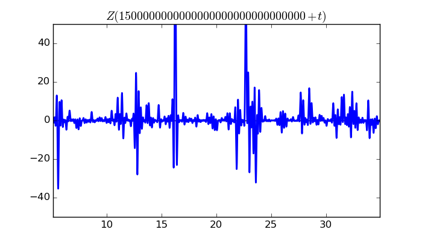
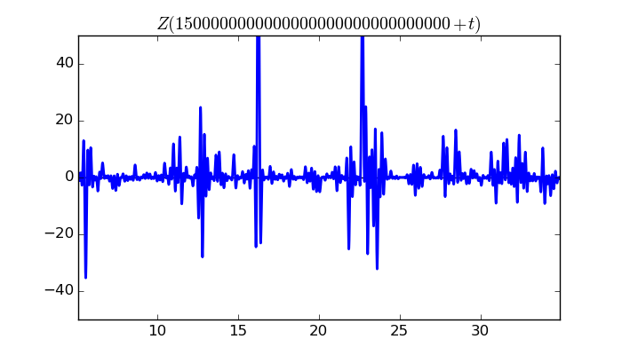
$\zeta(1/2 + it)$ around $t = 1420608056968699501169509003459 \approx 1.42060805697 \times 10^{ 30 }$
Largest value of $Z(t)$ in this graph:5051.118925
Value of $t$ for which the maximum occurs:1420608056968699501169509003479.90644922
Value of $\zeta(1/2 + it)$:$4523.466648 - 2247.676996i$
Maximum of $S(t)$ in this range:-2.908613306


$\zeta(1/2 + it)$ around $t = 1141639706784284971550986463600 \approx 1.14163970678 \times 10^{ 30 }$
Largest value of $Z(t)$ in this graph:-5711.799989
Value of $t$ for which the maximum occurs:1141639706784284971550986463620.52244141
Value of $\zeta(1/2 + it)$:$1083.032682 + 5608.181463i$
Maximum of $S(t)$ in this range:2.938800053
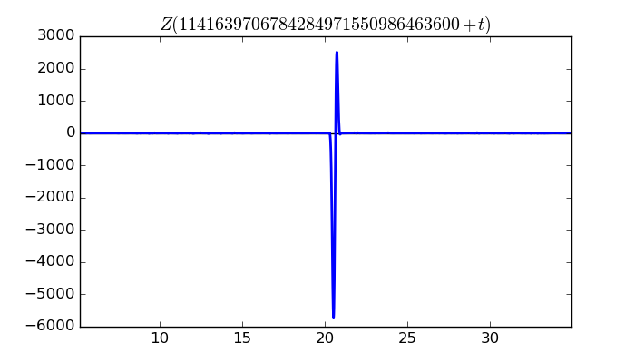


$\zeta(1/2 + it)$ around $t = 1096785418585585487051643762992 \approx 1.09678541859 \times 10^{ 30 }$
Largest value of $Z(t)$ in this graph:4578.232528
Value of $t$ for which the maximum occurs:1096785418585585487051643763012.23999609
Value of $\zeta(1/2 + it)$:$-253.9673593 - 4571.18296i$
Maximum of $S(t)$ in this range:-3.039497868


$\zeta(1/2 + it)$ around $t = 949298829754554964058786559858 \approx 9.49298829755 \times 10^{ 29 }$
Largest value of $Z(t)$ in this graph:-91.24195793
Value of $t$ for which the maximum occurs:949298829754554964058786559875.37699609
Value of $\zeta(1/2 + it)$:$72.08571989 + 55.93517566i$
Maximum of $S(t)$ in this range:1.696628187
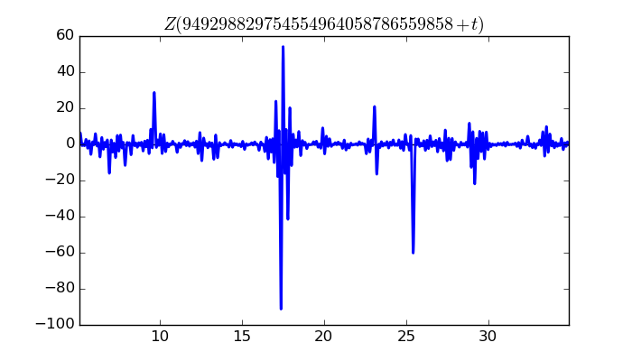


$\zeta(1/2 + it)$ around $t = 949298829754554930008909071187 \approx 9.49298829755 \times 10^{ 29 }$
Largest value of $Z(t)$ in this graph:-108.5077419
Value of $t$ for which the maximum occurs:949298829754554930008909071201.46619141
Value of $\zeta(1/2 + it)$:$85.23001621 - 67.15485383i$
Maximum of $S(t)$ in this range:1.586003426

 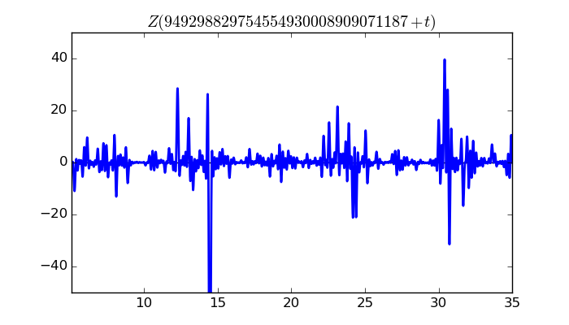
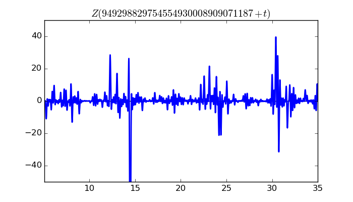
$\zeta(1/2 + it)$ around $t = 945714596951858489397711072913 \approx 9.45714596952 \times 10^{ 29 }$
Largest value of $Z(t)$ in this graph:-7789.094657
Value of $t$ for which the maximum occurs:945714596951858489397711072933.93114453
Value of $\zeta(1/2 + it)$:$7486.01452 + 2151.646386i$
Maximum of $S(t)$ in this range:2.944654374


$\zeta(1/2 + it)$ around $t = 904686125701038780309820323494 \approx 9.04686125701 \times 10^{ 29 }$
Largest value of $Z(t)$ in this graph:6611.050888
Value of $t$ for which the maximum occurs:904686125701038780309820323514.66999609
Value of $\zeta(1/2 + it)$:$6501.069097 + 1200.872363i$
Maximum of $S(t)$ in this range:2.609590399

 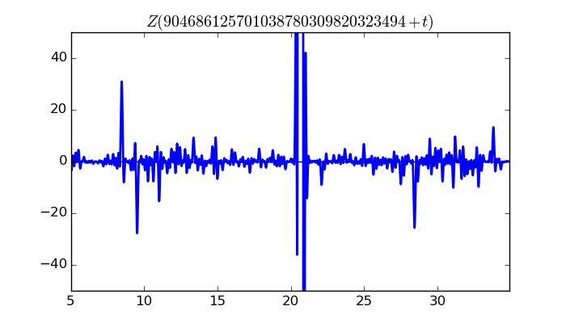
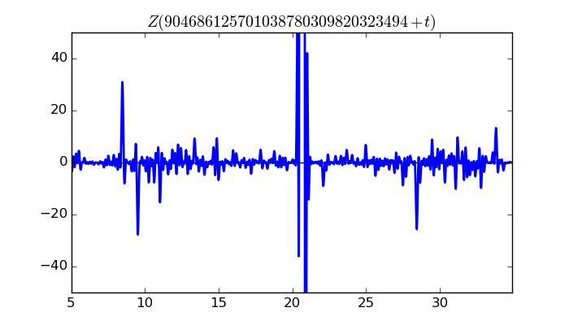
$\zeta(1/2 + it)$ around $t = 879454993987734164753812769184 \approx 8.79454993988 \times 10^{ 29 }$
Largest value of $Z(t)$ in this graph:5578.638522
Value of $t$ for which the maximum occurs:879454993987734164753812769204.33599609
Value of $\zeta(1/2 + it)$:$5467.905565 + 1105.99118i$
Maximum of $S(t)$ in this range:-2.891402879


$\zeta(1/2 + it)$ around $t = 840254377093000239632447060594 \approx 8.40254377093 \times 10^{ 29 }$
Largest value of $Z(t)$ in this graph:9474.568549
Value of $t$ for which the maximum occurs:840254377093000239632447060614.47414453
Value of $\zeta(1/2 + it)$:$7616.255739 + 5635.609789i$
Maximum of $S(t)$ in this range:2.847742768


$\zeta(1/2 + it)$ around $t = 803625728592344363123814218758 \approx 8.03625728592 \times 10^{ 29 }$
Largest value of $Z(t)$ in this graph:10282.64968
Value of $t$ for which the maximum occurs:803625728592344363123814218778.19937891
Value of $\zeta(1/2 + it)$:$10017.94308 + 2318.124414i$
Maximum of $S(t)$ in this range:2.920400992


$\zeta(1/2 + it)$ around $t = 698156288971519916135942940440 \approx 6.98156288972 \times 10^{ 29 }$
Largest value of $Z(t)$ in this graph:11195.68103
Value of $t$ for which the maximum occurs:698156288971519916135942940460.33499609
Value of $\zeta(1/2 + it)$:$10940.47743 - 2376.810349i$
Maximum of $S(t)$ in this range:-2.981733857


$\zeta(1/2 + it)$ around $t = 693830873990128577485748288481 \approx 6.9383087399 \times 10^{ 29 }$
Largest value of $Z(t)$ in this graph:8828.179585
Value of $t$ for which the maximum occurs:693830873990128577485748288501.64839453
Value of $\zeta(1/2 + it)$:$8810.469972 + 558.9039748i$
Maximum of $S(t)$ in this range:2.871557265

$\zeta(1/2 + it)$ around $t = 690422639823936254540302269422 \approx 6.90422639824 \times 10^{ 29 }$
Largest value of $Z(t)$ in this graph:10268.71341
Value of $t$ for which the maximum occurs:690422639823936254540302269442.48544141
Value of $\zeta(1/2 + it)$:$10182.58226 - 1327.212724i$
Maximum of $S(t)$ in this range:2.804040251


$\zeta(1/2 + it)$ around $t = 654481567670182637601566203483 \approx 6.5448156767 \times 10^{ 29 }$
Largest value of $Z(t)$ in this graph:-6349.167694
Value of $t$ for which the maximum occurs:654481567670182637601566203503.20333984
Value of $\zeta(1/2 + it)$:$6080.699898 - 1826.750984i$
Maximum of $S(t)$ in this range:2.669410325


$\zeta(1/2 + it)$ around $t = 552166410009931288886808632326 \approx 5.5216641001 \times 10^{ 29 }$
Largest value of $Z(t)$ in this graph:-13558.83313
Value of $t$ for which the maximum occurs:552166410009931288886808632346.50524609
Value of $\zeta(1/2 + it)$:$13541.30633 + 689.1870722i$
Maximum of $S(t)$ in this range:2.942736054


$\zeta(1/2 + it)$ around $t = 552166410009931288886808632326 \approx 5.5216641001 \times 10^{ 29 }$
Largest value of $Z(t)$ in this graph:-13558.83314
Value of $t$ for which the maximum occurs:552166410009931288886808632346.50524609
Value of $\zeta(1/2 + it)$:$13541.30634 + 689.1870728i$
Maximum of $S(t)$ in this range:2.942729904
$\zeta(1/2 + it)$ around $t = 549927995422277597978521852516 \approx 5.49927995422 \times 10^{ 29 }$
Largest value of $Z(t)$ in this graph:2952.392224
Value of $t$ for which the maximum occurs:549927995422277597978521852536.17830078
Value of $\zeta(1/2 + it)$:$2248.472863 + 1913.371273i$
Maximum of $S(t)$ in this range:2.852039156


$\zeta(1/2 + it)$ around $t = 546577562321057124801498516799 \approx 5.46577562321 \times 10^{ 29 }$
Largest value of $Z(t)$ in this graph:9122.702553
Value of $t$ for which the maximum occurs:546577562321057124801498516819.17808203
Value of $\zeta(1/2 + it)$:$5933.810423 - 6929.184348i$
Maximum of $S(t)$ in this range:-3.274867991

$\zeta(1/2 + it)$ around $t = 505734497867330197269203385120 \approx 5.05734497867 \times 10^{ 29 }$
Largest value of $Z(t)$ in this graph:9762.217731
Value of $t$ for which the maximum occurs:505734497867330197269203385139.96099609
Value of $\zeta(1/2 + it)$:$9722.2053 - 882.9604329i$
Maximum of $S(t)$ in this range:-2.778418997

$\zeta(1/2 + it)$ around $t = 461193511079478673832281649547 \approx 4.61193511079 \times 10^{ 29 }$
Largest value of $Z(t)$ in this graph:-6497.043876
Value of $t$ for which the maximum occurs:461193511079478673832281649567.60522266
Value of $\zeta(1/2 + it)$:$3399.072327 + 5536.956424i$
Maximum of $S(t)$ in this range:2.813269141


$\zeta(1/2 + it)$ around $t = 428420582732952533001042876341 \approx 4.28420582733 \times 10^{ 29 }$
Largest value of $Z(t)$ in this graph:-7466.011681
Value of $t$ for which the maximum occurs:428420582732952533001042876361.35601953
Value of $\zeta(1/2 + it)$:$7452.250331 - 453.0953708i$
Maximum of $S(t)$ in this range:-2.458213966


$\zeta(1/2 + it)$ around $t = 385839660904944495427367063048 \approx 3.85839660905 \times 10^{ 29 }$
Largest value of $Z(t)$ in this graph:-8068.69147
Value of $t$ for which the maximum occurs:385839660904944495427367063068.81199609
Value of $\zeta(1/2 + it)$:$8064.179249 - 269.8056254i$
Maximum of $S(t)$ in this range:-2.940021181


$\zeta(1/2 + it)$ around $t = 305937680740931723147858123112 \approx 3.05937680741 \times 10^{ 29 }$
Largest value of $Z(t)$ in this graph:-5906.914516
Value of $t$ for which the maximum occurs:305937680740931723147858123132.50838672
Value of $\zeta(1/2 + it)$:$4480.615516 - 3849.11986i$
Maximum of $S(t)$ in this range:2.961948189


$\zeta(1/2 + it)$ around $t = 304957061419820580927699847346 \approx 3.0495706142 \times 10^{ 29 }$
Largest value of $Z(t)$ in this graph:-4488.222485
Value of $t$ for which the maximum occurs:304957061419820580927699847365.99099609
Value of $\zeta(1/2 + it)$:$1577.834557 + 4201.735259i$
Maximum of $S(t)$ in this range:-2.711519752


$\zeta(1/2 + it)$ around $t = 304957061419820580927699847346 \approx 3.0495706142 \times 10^{ 29 }$
Largest value of $Z(t)$ in this graph:-4488.222579
Value of $t$ for which the maximum occurs:304957061419820580927699847365.99099609
Value of $\zeta(1/2 + it)$:$1577.83459 + 4201.735347i$
Maximum of $S(t)$ in this range:-2.711519672
$\zeta(1/2 + it)$ around $t = 303710769550561210185584673592 \approx 3.03710769551 \times 10^{ 29 }$
Largest value of $Z(t)$ in this graph:5730.804231
Value of $t$ for which the maximum occurs:303710769550561210185584673612.84299609
Value of $\zeta(1/2 + it)$:$4925.149041 - 2930.021169i$
Maximum of $S(t)$ in this range:2.845531359
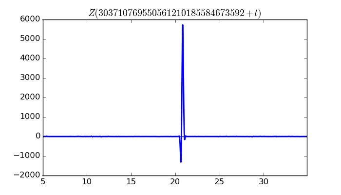


$\zeta(1/2 + it)$ around $t = 299329894577457912595173700867 \approx 2.99329894577 \times 10^{ 29 }$
Largest value of $Z(t)$ in this graph:4366.988583
Value of $t$ for which the maximum occurs:299329894577457912595173700887.35019141
Value of $\zeta(1/2 + it)$:$2901.063845 - 3264.110575i$
Maximum of $S(t)$ in this range:-2.759057131


$\zeta(1/2 + it)$ around $t = 297212370308751345986703821912 \approx 2.97212370309 \times 10^{ 29 }$
Largest value of $Z(t)$ in this graph:3086.331841
Value of $t$ for which the maximum occurs:297212370308751345986703821932.36599609
Value of $\zeta(1/2 + it)$:$3011.859561 + 673.903716i$
Maximum of $S(t)$ in this range:-2.861553626

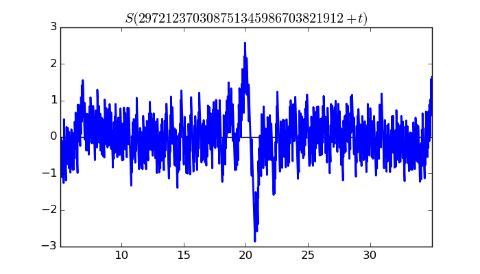

$\zeta(1/2 + it)$ around $t = 293518062064605653984124715485 \approx 2.93518062065 \times 10^{ 29 }$
Largest value of $Z(t)$ in this graph:3006.056931
Value of $t$ for which the maximum occurs:293518062064605653984124715504.46329297
Value of $\zeta(1/2 + it)$:$-353.7548445 + 2985.169305i$
Maximum of $S(t)$ in this range:3.061978193

 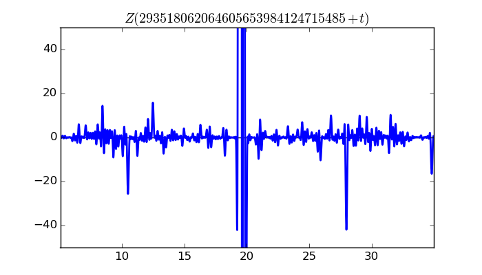
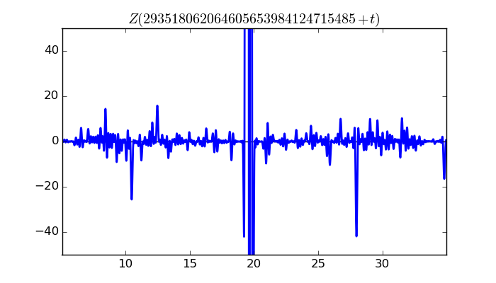
$\zeta(1/2 + it)$ around $t = 290932446696986343750382659969 \approx 2.90932446697 \times 10^{ 29 }$
Largest value of $Z(t)$ in this graph:-3881.144296
Value of $t$ for which the maximum occurs:290932446696986343750382659989.46499609
Value of $\zeta(1/2 + it)$:$3240.657427 + 2135.748227i$
Maximum of $S(t)$ in this range:-3.066589379


$\zeta(1/2 + it)$ around $t = 289286076719325307718380549030 \approx 2.89286076719 \times 10^{ 29 }$
Largest value of $Z(t)$ in this graph:10916.11452
Value of $t$ for which the maximum occurs:289286076719325307718380549050.25637109
Value of $\zeta(1/2 + it)$:$10527.26723 - 2887.594327i$
Maximum of $S(t)$ in this range:2.776524101


$\zeta(1/2 + it)$ around $t = 280000574040731815906857596164 \approx 2.80000574041 \times 10^{ 29 }$
Largest value of $Z(t)$ in this graph:7780.452261
Value of $t$ for which the maximum occurs:280000574040731815906857596184.57122266
Value of $\zeta(1/2 + it)$:$7389.291384 + 2435.941344i$
Maximum of $S(t)$ in this range:2.79084905

$\zeta(1/2 + it)$ around $t = 272049621216375058781451961726 \approx 2.72049621216 \times 10^{ 29 }$
Largest value of $Z(t)$ in this graph:5743.94897
Value of $t$ for which the maximum occurs:272049621216375058781451961745.92008203
Value of $\zeta(1/2 + it)$:$4161.611639 + 3959.0325i$
Maximum of $S(t)$ in this range:-2.781559362

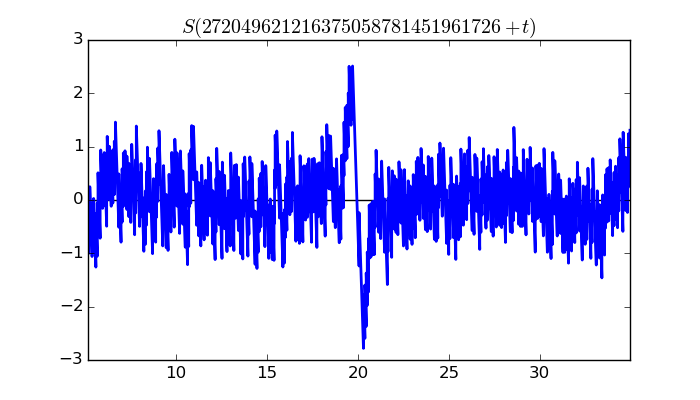

$\zeta(1/2 + it)$ around $t = 272049621216375058781451961725 \approx 2.72049621216 \times 10^{ 29 }$
Largest value of $Z(t)$ in this graph:5743.948956
Value of $t$ for which the maximum occurs:272049621216375058781451961745.92008203
Value of $\zeta(1/2 + it)$:$4161.611629 + 3959.03249i$
Maximum of $S(t)$ in this range:-2.781559202

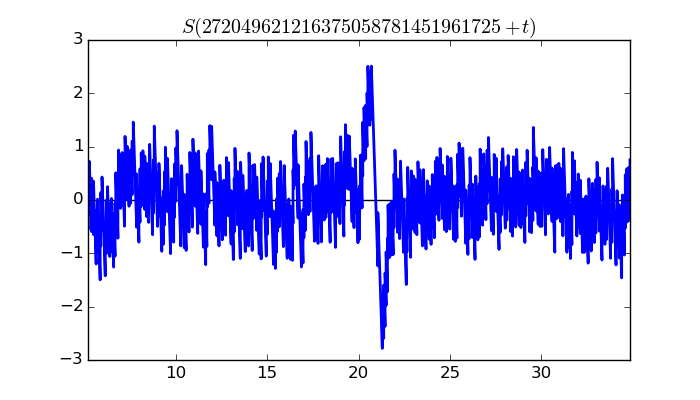

$\zeta(1/2 + it)$ around $t = 269789203122327751124050740073 \approx 2.69789203122 \times 10^{ 29 }$
Largest value of $Z(t)$ in this graph:8506.467533
Value of $t$ for which the maximum occurs:269789203122327751124050740093.37699609
Value of $\zeta(1/2 + it)$:$6578.266463 + 5393.180901i$
Maximum of $S(t)$ in this range:3.075848713


$\zeta(1/2 + it)$ around $t = 252074126751888908904113083287 \approx 2.52074126752 \times 10^{ 29 }$
Largest value of $Z(t)$ in this graph:1724.131208
Value of $t$ for which the maximum occurs:252074126751888908904113083307.72999609
Value of $\zeta(1/2 + it)$:$871.8782842 + 1487.432916i$
Maximum of $S(t)$ in this range:2.585135743


$\zeta(1/2 + it)$ around $t = 241671620116648015291072947155 \approx 2.41671620117 \times 10^{ 29 }$
Largest value of $Z(t)$ in this graph:-7853.458783
Value of $t$ for which the maximum occurs:241671620116648015291072947175.56100391
Value of $\zeta(1/2 + it)$:$7768.850675 + 1149.684324i$
Maximum of $S(t)$ in this range:-2.59371039


$\zeta(1/2 + it)$ around $t = 236914707551252820596633127499 \approx 2.36914707551 \times 10^{ 29 }$
Largest value of $Z(t)$ in this graph:-5019.933161
Value of $t$ for which the maximum occurs:236914707551252820596633127519.22699609
Value of $\zeta(1/2 + it)$:$3197.220059 - 3870.079177i$
Maximum of $S(t)$ in this range:2.791269815


$\zeta(1/2 + it)$ around $t = 231723395114381721637460884790 \approx 2.31723395114 \times 10^{ 29 }$
Largest value of $Z(t)$ in this graph:-7788.048367
Value of $t$ for which the maximum occurs:231723395114381721637460884810.38536328
Value of $\zeta(1/2 + it)$:$7640.590122 + 1508.336815i$
Maximum of $S(t)$ in this range:2.737522488


$\zeta(1/2 + it)$ around $t = 222795271975141839186726115317 \approx 2.22795271975 \times 10^{ 29 }$
Largest value of $Z(t)$ in this graph:3958.409438
Value of $t$ for which the maximum occurs:222795271975141839186726115337.27532422
Value of $\zeta(1/2 + it)$:$2023.064201 - 3402.383946i$
Maximum of $S(t)$ in this range:2.84961886


$\zeta(1/2 + it)$ around $t = 217573127862765175040002591229 \approx 2.17573127863 \times 10^{ 29 }$
Largest value of $Z(t)$ in this graph:3337.209883
Value of $t$ for which the maximum occurs:217573127862765175040002591249.60999609
Value of $\zeta(1/2 + it)$:$3119.831434 - 1184.745384i$
Maximum of $S(t)$ in this range:2.661482271


$\zeta(1/2 + it)$ around $t = 214034968914410911693730173700 \approx 2.14034968914 \times 10^{ 29 }$
Largest value of $Z(t)$ in this graph:-8441.704689
Value of $t$ for which the maximum occurs:214034968914410911693730173720.94199609
Value of $\zeta(1/2 + it)$:$7721.448482 - 3411.980567i$
Maximum of $S(t)$ in this range:-2.890878717


$\zeta(1/2 + it)$ around $t = 206058102488784342419984566108 \approx 2.06058102489 \times 10^{ 29 }$
Largest value of $Z(t)$ in this graph:6929.831204
Value of $t$ for which the maximum occurs:206058102488784342419984566128.35629297
Value of $\zeta(1/2 + it)$:$6929.814562 - 15.18763687i$
Maximum of $S(t)$ in this range:2.779283068


$\zeta(1/2 + it)$ around $t = 188366683208378544714532966108 \approx 1.88366683208 \times 10^{ 29 }$
Largest value of $Z(t)$ in this graph:-2103.267709
Value of $t$ for which the maximum occurs:188366683208378544714532966128.27299609
Value of $\zeta(1/2 + it)$:$2101.617666 + 83.29611582i$
Maximum of $S(t)$ in this range:-2.286260736


$\zeta(1/2 + it)$ around $t = 182947305623024546647302946781 \approx 1.82947305623 \times 10^{ 29 }$
Largest value of $Z(t)$ in this graph:-6361.82605
Value of $t$ for which the maximum occurs:182947305623024546647302946801.20419141
Value of $\zeta(1/2 + it)$:$4768.65483 - 4211.028592i$
Maximum of $S(t)$ in this range:3.001007294


$\zeta(1/2 + it)$ around $t = 181121957469124965730186919338 \approx 1.81121957469 \times 10^{ 29 }$
Largest value of $Z(t)$ in this graph:-3700.872338
Value of $t$ for which the maximum occurs:181121957469124965730186919358.39799609
Value of $\zeta(1/2 + it)$:$3044.54707 - 2104.088686i$
Maximum of $S(t)$ in this range:2.699369703


$\zeta(1/2 + it)$ around $t = 171207393801570900621968363457 \approx 1.71207393802 \times 10^{ 29 }$
Largest value of $Z(t)$ in this graph:5228.432689
Value of $t$ for which the maximum occurs:171207393801570900621968363477.05702734
Value of $\zeta(1/2 + it)$:$4681.757712 + 2327.585254i$
Maximum of $S(t)$ in this range:2.636463167

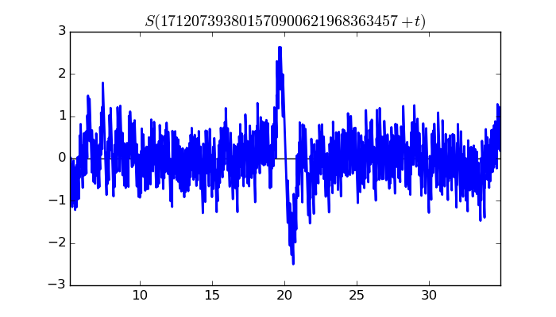

$\zeta(1/2 + it)$ around $t = 167460505621937453717737789992 \approx 1.67460505622 \times 10^{ 29 }$
Largest value of $Z(t)$ in this graph:-5095.493177
Value of $t$ for which the maximum occurs:167460505621937453717737790012.39124609
Value of $\zeta(1/2 + it)$:$1939.875535 - 4711.78667i$
Maximum of $S(t)$ in this range:2.716642068
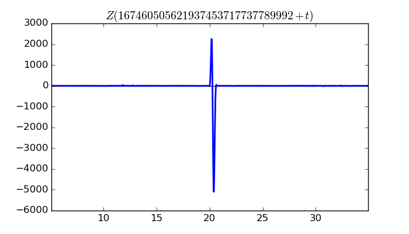


$\zeta(1/2 + it)$ around $t = 155022509712772372546593011496 \approx 1.55022509713 \times 10^{ 29 }$
Largest value of $Z(t)$ in this graph:-833.2591909
Value of $t$ for which the maximum occurs:155022509712772372546593011498.406996094
Value of $\zeta(1/2 + it)$:$72.59070899 - 830.0912409i$
Maximum of $S(t)$ in this range:-2.200180905


$\zeta(1/2 + it)$ around $t = 151430114521478793791897636280 \approx 1.51430114521 \times 10^{ 29 }$
Largest value of $Z(t)$ in this graph:9171.086741
Value of $t$ for which the maximum occurs:151430114521478793791897636299.94044141
Value of $\zeta(1/2 + it)$:$8746.666937 - 2757.652897i$
Maximum of $S(t)$ in this range:-2.933250462

 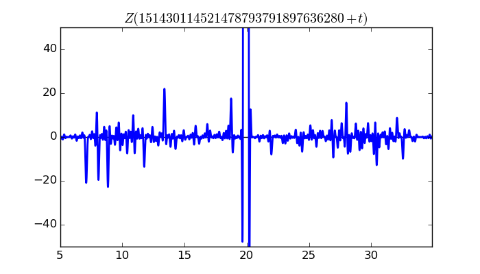
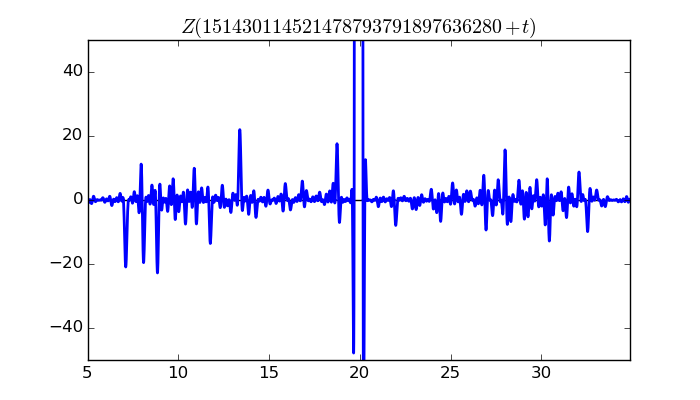
$\zeta(1/2 + it)$ around $t = 150000000000000000000000000000 \approx 1.5 \times 10^{ 29 }$
Largest value of $Z(t)$ in this graph:112.2148424
Value of $t$ for which the maximum occurs:150000000000000000000000000001.737996094
Value of $\zeta(1/2 + it)$:$19.54040032 - 110.5004236i$
Maximum of $S(t)$ in this range:-1.855361979


$\zeta(1/2 + it)$ around $t = 146938392544594231809171188638 \approx 1.46938392545 \times 10^{ 29 }$
Largest value of $Z(t)$ in this graph:8612.136976
Value of $t$ for which the maximum occurs:146938392544594231809171188658.37899609
Value of $\zeta(1/2 + it)$:$8484.468484 - 1477.395627i$
Maximum of $S(t)$ in this range:-3.01622673

$\zeta(1/2 + it)$ around $t = 139909165720312176640219432458 \approx 1.3990916572 \times 10^{ 29 }$
Largest value of $Z(t)$ in this graph:-7927.955564
Value of $t$ for which the maximum occurs:139909165720312176640219432478.19906641
Value of $\zeta(1/2 + it)$:$7389.347921 - 2872.284236i$
Maximum of $S(t)$ in this range:-2.704498136


$\zeta(1/2 + it)$ around $t = 133648977500290800142661619768 \approx 1.336489775 \times 10^{ 29 }$
Largest value of $Z(t)$ in this graph:-8895.692825
Value of $t$ for which the maximum occurs:133648977500290800142661619788.58704297
Value of $\zeta(1/2 + it)$:$8605.44346 - 2253.817581i$
Maximum of $S(t)$ in this range:-2.67494708


$\zeta(1/2 + it)$ around $t = 119436902627122039941399691338 \approx 1.19436902627 \times 10^{ 29 }$
Largest value of $Z(t)$ in this graph:3577.619333
Value of $t$ for which the maximum occurs:119436902627122039941399691358.71844141
Value of $\zeta(1/2 + it)$:$591.7468084 + 3528.341793i$
Maximum of $S(t)$ in this range:2.660070397


$\zeta(1/2 + it)$ around $t = 117469312393254571652414861471 \approx 1.17469312393 \times 10^{ 29 }$
Largest value of $Z(t)$ in this graph:7825.657273
Value of $t$ for which the maximum occurs:117469312393254571652414861491.12899609
Value of $\zeta(1/2 + it)$:$7812.166121 + 459.3171566i$
Maximum of $S(t)$ in this range:2.739302715


$\zeta(1/2 + it)$ around $t = 111015159201859824641545540652 \approx 1.11015159202 \times 10^{ 29 }$
Largest value of $Z(t)$ in this graph:-7326.028518
Value of $t$ for which the maximum occurs:111015159201859824641545540672.23627734
Value of $\zeta(1/2 + it)$:$7290.518946 + 720.4355207i$
Maximum of $S(t)$ in this range:2.551347249
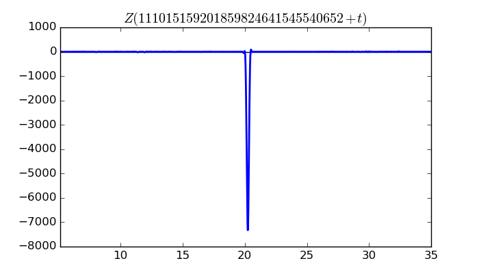
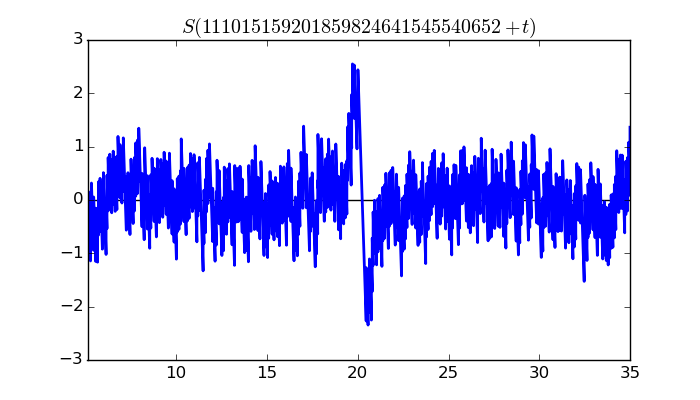

$\zeta(1/2 + it)$ around $t = 108356607101027725615720111511 \approx 1.08356607101 \times 10^{ 29 }$
Largest value of $Z(t)$ in this graph:7307.267108
Value of $t$ for which the maximum occurs:108356607101027725615720111531.85548047
Value of $\zeta(1/2 + it)$:$6932.300961 + 2310.704649i$
Maximum of $S(t)$ in this range:2.703154936


$\zeta(1/2 + it)$ around $t = 106083435123833682817729018283 \approx 1.06083435124 \times 10^{ 29 }$
Largest value of $Z(t)$ in this graph:-3663.855906
Value of $t$ for which the maximum occurs:106083435123833682817729018303.55199609
Value of $\zeta(1/2 + it)$:$3291.241392 - 1609.835456i$
Maximum of $S(t)$ in this range:2.681987328
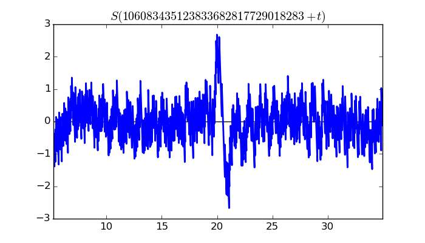

$\zeta(1/2 + it)$ around $t = 104980544957135160192959860976 \approx 1.04980544957 \times 10^{ 29 }$
Largest value of $Z(t)$ in this graph:1495.929266
Value of $t$ for which the maximum occurs:104980544957135160192959860996.17813672
Value of $\zeta(1/2 + it)$:$1123.902448 - 987.2424504i$
Maximum of $S(t)$ in this range:-2.209349985

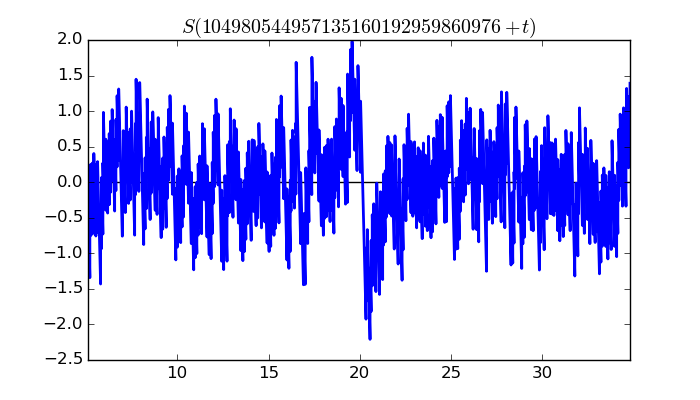

$\zeta(1/2 + it)$ around $t = 99999999999999999999999999980 \approx 1.0 \times 10^{ 29 }$
Largest value of $Z(t)$ in this graph:92.81945109
Value of $t$ for which the maximum occurs:99999999999999999999999999999.87699609
Value of $\zeta(1/2 + it)$:$18.41892971 + 90.97358699i$
Maximum of $S(t)$ in this range:-1.808280086


$\zeta(1/2 + it)$ around $t = 98297762869274426683196572871 \approx 9.82977628693 \times 10^{ 28 }$
Largest value of $Z(t)$ in this graph:-115.3268952
Value of $t$ for which the maximum occurs:98297762869274426683196572908.90499609
Value of $\zeta(1/2 + it)$:$114.6584263 - 12.39911389i$
Maximum of $S(t)$ in this range:-1.929701413


$\zeta(1/2 + it)$ around $t = 98297762869274424758690514882 \approx 9.82977628693 \times 10^{ 28 }$
Largest value of $Z(t)$ in this graph:-49.60471107
Value of $t$ for which the maximum occurs:98297762869274424758690514894.72599609
Value of $\zeta(1/2 + it)$:$22.28773628 - 44.31573278i$
Maximum of $S(t)$ in this range:-1.743527903


$\zeta(1/2 + it)$ around $t = 92252126514630790658782978863 \approx 9.22521265146 \times 10^{ 28 }$
Largest value of $Z(t)$ in this graph:5179.864473
Value of $t$ for which the maximum occurs:92252126514630790658782978883.74812891
Value of $\zeta(1/2 + it)$:$5159.86486 + 454.7423372i$
Maximum of $S(t)$ in this range:-2.744738546

 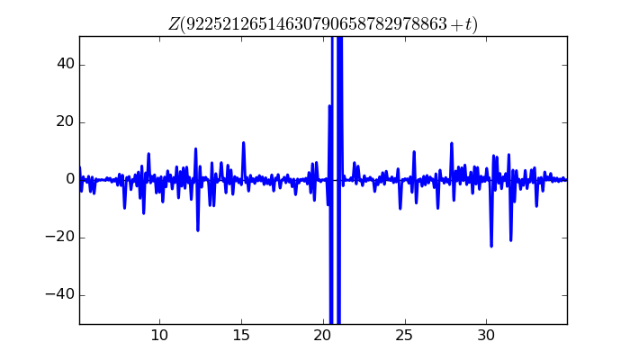
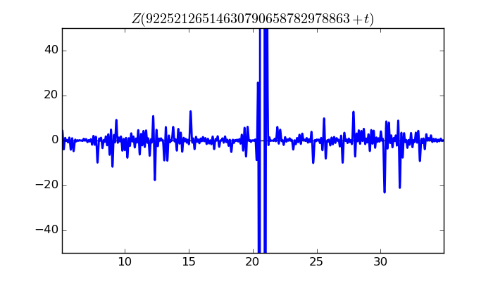
$\zeta(1/2 + it)$ around $t = 89869857757291582322528149832 \approx 8.98698577573 \times 10^{ 28 }$
Largest value of $Z(t)$ in this graph:7295.672412
Value of $t$ for which the maximum occurs:89869857757291582322528149852.33799609
Value of $\zeta(1/2 + it)$:$7117.657993 - 1601.805431i$
Maximum of $S(t)$ in this range:-2.855984676

 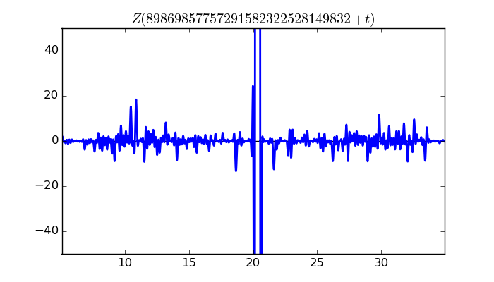
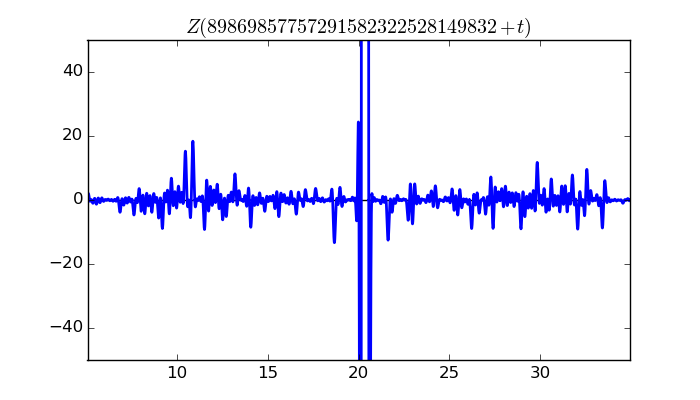
$\zeta(1/2 + it)$ around $t = 85052987797410463487724040101 \approx 8.50529877974 \times 10^{ 28 }$
Largest value of $Z(t)$ in this graph:-9681.157815
Value of $t$ for which the maximum occurs:85052987797410463487724040121.40299609
Value of $\zeta(1/2 + it)$:$9050.938408 - 3435.888614i$
Maximum of $S(t)$ in this range:-2.96822366


$\zeta(1/2 + it)$ around $t = 77590565202125505656738011622 \approx 7.75905652021 \times 10^{ 28 }$
Largest value of $Z(t)$ in this graph:-1985.875308
Value of $t$ for which the maximum occurs:77590565202125505656738011642.06399609
Value of $\zeta(1/2 + it)$:$1317.67109 + 1485.746829i$
Maximum of $S(t)$ in this range:3.143148894

 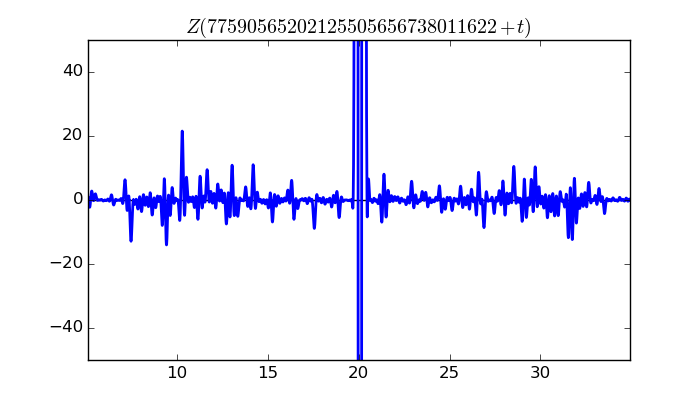
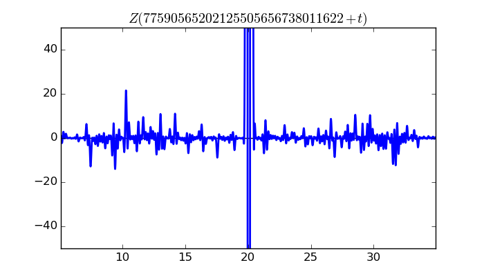
$\zeta(1/2 + it)$ around $t = 77569920220331685642812156730 \approx 7.75699202203 \times 10^{ 28 }$
Largest value of $Z(t)$ in this graph:8285.637599
Value of $t$ for which the maximum occurs:77569920220331685642812156750.51899609
Value of $\zeta(1/2 + it)$:$7580.279693 + 3345.317651i$
Maximum of $S(t)$ in this range:2.752073076
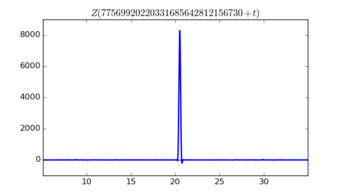


$\zeta(1/2 + it)$ around $t = 77197823425564908095288722823 \approx 7.71978234256 \times 10^{ 28 }$
Largest value of $Z(t)$ in this graph:4577.089147
Value of $t$ for which the maximum occurs:77197823425564908095288722843.27999609
Value of $\zeta(1/2 + it)$:$4575.950913 + 102.0701095i$
Maximum of $S(t)$ in this range:-2.552270039


$\zeta(1/2 + it)$ around $t = 69283136738573030099505979364 \approx 6.92831367386 \times 10^{ 28 }$
Largest value of $Z(t)$ in this graph:6594.411432
Value of $t$ for which the maximum occurs:69283136738573030099505979384.60300391
Value of $\zeta(1/2 + it)$:$6310.067016 + 1915.545975i$
Maximum of $S(t)$ in this range:2.590370895

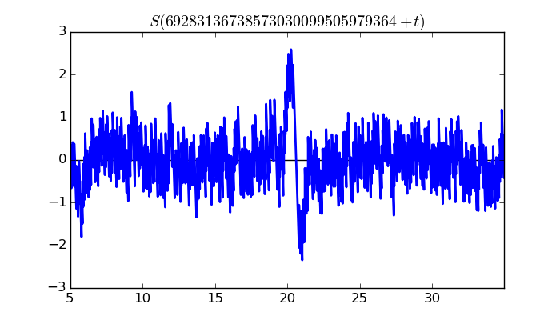

$\zeta(1/2 + it)$ around $t = 65242659578329486541993870525 \approx 6.52426595783 \times 10^{ 28 }$
Largest value of $Z(t)$ in this graph:7574.336071
Value of $t$ for which the maximum occurs:65242659578329486541993870545.83349609
Value of $\zeta(1/2 + it)$:$7573.885503 - 82.61539614i$
Maximum of $S(t)$ in this range:2.576834853

 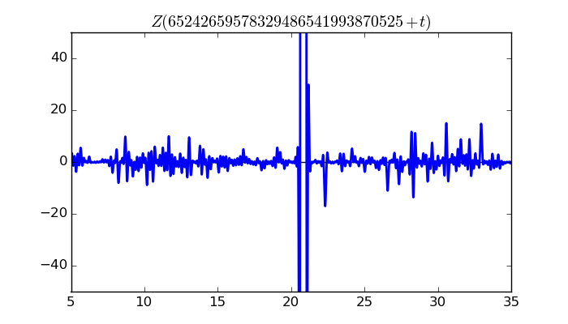
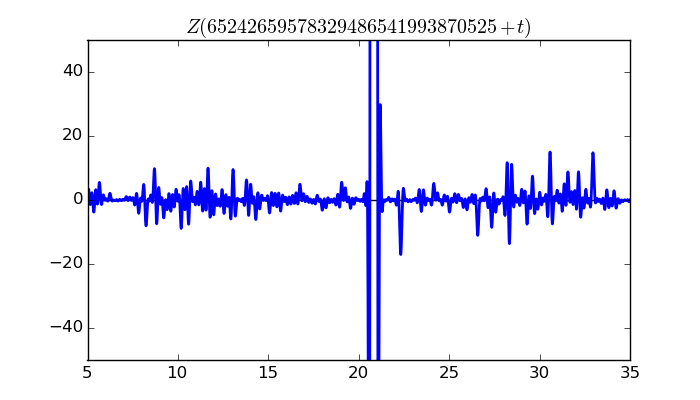
$\zeta(1/2 + it)$ around $t = 58755046149007347602141184542 \approx 5.8755046149 \times 10^{ 28 }$
Largest value of $Z(t)$ in this graph:6909.736032
Value of $t$ for which the maximum occurs:58755046149007347602141184562.68842578
Value of $\zeta(1/2 + it)$:$2757.813339 - 6335.528204i$
Maximum of $S(t)$ in this range:-2.950849732


$\zeta(1/2 + it)$ around $t = 46709141854660972368505489012 \approx 4.67091418547 \times 10^{ 28 }$
Largest value of $Z(t)$ in this graph:9588.153211
Value of $t$ for which the maximum occurs:46709141854660972368505489032.74299609
Value of $\zeta(1/2 + it)$:$8574.576809 - 4290.607712i$
Maximum of $S(t)$ in this range:-3.034957494
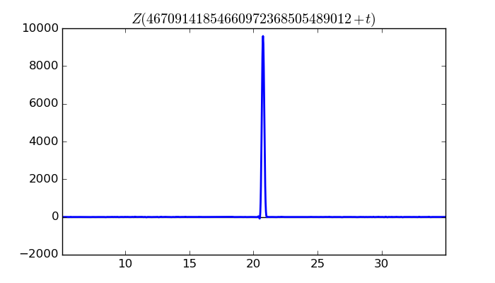
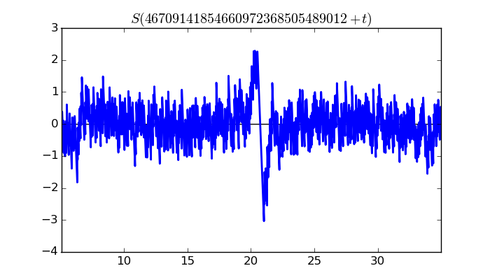

$\zeta(1/2 + it)$ around $t = 44867947686873514805536376226 \approx 4.48679476869 \times 10^{ 28 }$
Largest value of $Z(t)$ in this graph:-6138.274906
Value of $t$ for which the maximum occurs:44867947686873514805536376246.77722266
Value of $\zeta(1/2 + it)$:$5360.430311 + 2990.686493i$
Maximum of $S(t)$ in this range:2.811279888


$\zeta(1/2 + it)$ around $t = 39042432452317384450794590094 \approx 3.90424324523 \times 10^{ 28 }$
Largest value of $Z(t)$ in this graph:-4309.297765
Value of $t$ for which the maximum occurs:39042432452317384450794590114.70899609
Value of $\zeta(1/2 + it)$:$4009.158918 - 1580.092403i$
Maximum of $S(t)$ in this range:-2.612394546

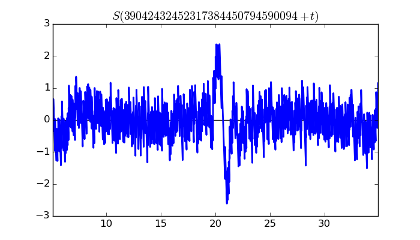

$\zeta(1/2 + it)$ around $t = 38951915228502087527406332890 \approx 3.89519152285 \times 10^{ 28 }$
Largest value of $Z(t)$ in this graph:3749.919667
Value of $t$ for which the maximum occurs:38951915228502087527406332910.31514453
Value of $\zeta(1/2 + it)$:$3125.122665 + 2072.560213i$
Maximum of $S(t)$ in this range:2.764219633


$\zeta(1/2 + it)$ around $t = 31774695316763918183637654345 \approx 3.17746953168 \times 10^{ 28 }$
Largest value of $Z(t)$ in this graph:-9563.639576
Value of $t$ for which the maximum occurs:31774695316763918183637654365.11514453
Value of $\zeta(1/2 + it)$:$8837.192713 + 3656.121838i$
Maximum of $S(t)$ in this range:3.257373832
$\zeta(1/2 + it)$ around $t = 30465914301167699710444825946 \approx 3.04659143012 \times 10^{ 28 }$
Largest value of $Z(t)$ in this graph:-4797.593944
Value of $t$ for which the maximum occurs:30465914301167699710444825966.80499609
Value of $\zeta(1/2 + it)$:$4433.424621 + 1833.481328i$
Maximum of $S(t)$ in this range:-2.97505049


$\zeta(1/2 + it)$ around $t = 25840202518036276937333565081 \approx 2.5840202518 \times 10^{ 28 }$
Largest value of $Z(t)$ in this graph:7949.095192
Value of $t$ for which the maximum occurs:25840202518036276937333565101.29299609
Value of $\zeta(1/2 + it)$:$7798.305973 + 1540.953706i$
Maximum of $S(t)$ in this range:-2.827939979


$\zeta(1/2 + it)$ around $t = 24838717447151027682848032823 \approx 2.48387174472 \times 10^{ 28 }$
Largest value of $Z(t)$ in this graph:-1516.956605
Value of $t$ for which the maximum occurs:24838717447151027682848032843.73199609
Value of $\zeta(1/2 + it)$:$1160.498791 - 976.9339267i$
Maximum of $S(t)$ in this range:-2.625778009


$\zeta(1/2 + it)$ around $t = 23250719692201127177747536545 \approx 2.32507196922 \times 10^{ 28 }$
Largest value of $Z(t)$ in this graph:7500.573929
Value of $t$ for which the maximum occurs:23250719692201127177747536565.20433984
Value of $\zeta(1/2 + it)$:$7482.749871 + 516.781996i$
Maximum of $S(t)$ in this range:2.895462974


$\zeta(1/2 + it)$ around $t = 20708559982326431831001677851 \approx 2.07085599823 \times 10^{ 28 }$
Largest value of $Z(t)$ in this graph:3814.438136
Value of $t$ for which the maximum occurs:20708559982326431831001677871.05799609
Value of $\zeta(1/2 + it)$:$3804.315468 + 277.7086877i$
Maximum of $S(t)$ in this range:2.790714765


$\zeta(1/2 + it)$ around $t = 20599365123201125180746910048 \approx 2.05993651232 \times 10^{ 28 }$
Largest value of $Z(t)$ in this graph:3803.865482
Value of $t$ for which the maximum occurs:20599365123201125180746910068.92001953
Value of $\zeta(1/2 + it)$:$1579.501595 - 3460.428776i$
Maximum of $S(t)$ in this range:-2.695663675


$\zeta(1/2 + it)$ around $t = 20167521863315855715464294057 \approx 2.01675218633 \times 10^{ 28 }$
Largest value of $Z(t)$ in this graph:7471.985684
Value of $t$ for which the maximum occurs:20167521863315855715464294077.03499609
Value of $\zeta(1/2 + it)$:$7450.305881 + 568.7814586i$
Maximum of $S(t)$ in this range:-2.919826113
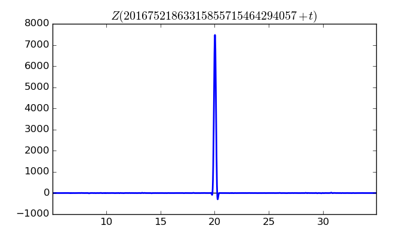


$\zeta(1/2 + it)$ around $t = 16000000000000000000000000280 \approx 1.6 \times 10^{ 28 }$
Largest value of $Z(t)$ in this graph:-52.9603908
Value of $t$ for which the maximum occurs:16000000000000000000000000285.464371094
Value of $\zeta(1/2 + it)$:$51.60156147 + 11.91980901i$
Maximum of $S(t)$ in this range:1.911026801
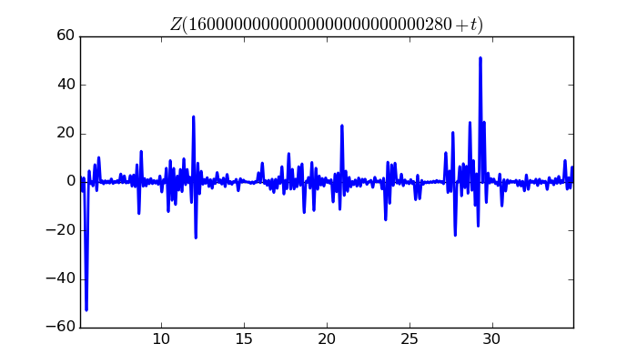
 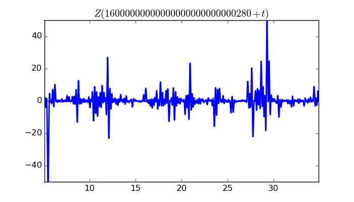
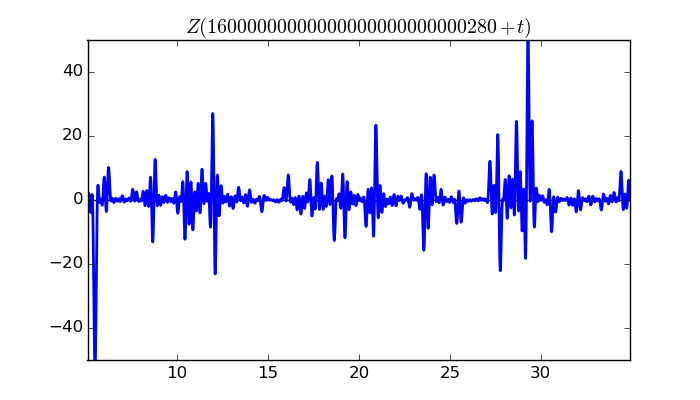
$\zeta(1/2 + it)$ around $t = 16000000000000000000000000240 \approx 1.6 \times 10^{ 28 }$
Largest value of $Z(t)$ in this graph:53.38828197
Value of $t$ for which the maximum occurs:16000000000000000000000000269.46129297
Value of $\zeta(1/2 + it)$:$42.94314042 - 31.72058231i$
Maximum of $S(t)$ in this range:-1.821940621


$\zeta(1/2 + it)$ around $t = 16000000000000000000000000200 \approx 1.6 \times 10^{ 28 }$
Largest value of $Z(t)$ in this graph:76.51552714
Value of $t$ for which the maximum occurs:16000000000000000000000000217.67502734
Value of $\zeta(1/2 + it)$:$73.29971836 - 21.94942328i$
Maximum of $S(t)$ in this range:1.985930957

 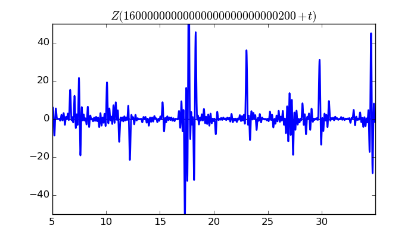
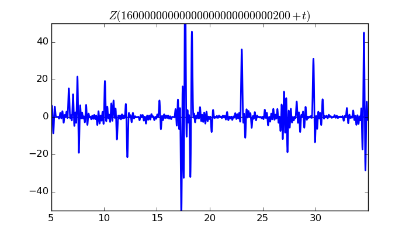
$\zeta(1/2 + it)$ around $t = 16000000000000000000000000160 \approx 1.6 \times 10^{ 28 }$
Largest value of $Z(t)$ in this graph:47.88757599
Value of $t$ for which the maximum occurs:16000000000000000000000000171.63344922
Value of $\zeta(1/2 + it)$:$25.51660348 + 40.52311538i$
Maximum of $S(t)$ in this range:2.105122285


$\zeta(1/2 + it)$ around $t = 16000000000000000000000000120 \approx 1.6 \times 10^{ 28 }$
Largest value of $Z(t)$ in this graph:159.8677628
Value of $t$ for which the maximum occurs:16000000000000000000000000137.47948047
Value of $\zeta(1/2 + it)$:$-75.73409037 - 140.7907992i$
Maximum of $S(t)$ in this range:-2.6040471
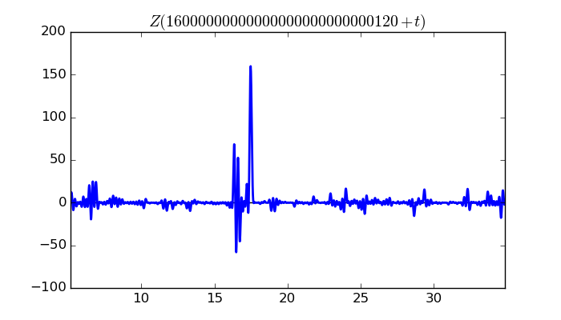


$\zeta(1/2 + it)$ around $t = 16000000000000000000000000080 \approx 1.6 \times 10^{ 28 }$
Largest value of $Z(t)$ in this graph:91.55816467
Value of $t$ for which the maximum occurs:16000000000000000000000000090.19130078
Value of $\zeta(1/2 + it)$:$59.07766963 + 69.94802692i$
Maximum of $S(t)$ in this range:1.876948858
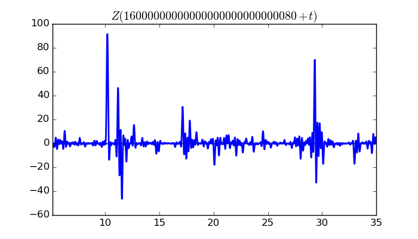

$\zeta(1/2 + it)$ around $t = 16000000000000000000000000040 \approx 1.6 \times 10^{ 28 }$
Largest value of $Z(t)$ in this graph:-91.12304976
Value of $t$ for which the maximum occurs:16000000000000000000000000055.49999609
Value of $\zeta(1/2 + it)$:$52.44663336 - 74.51684942i$
Maximum of $S(t)$ in this range:-1.744488991

$\zeta(1/2 + it)$ around $t = 16000000000000000000000000000 \approx 1.6 \times 10^{ 28 }$
Largest value of $Z(t)$ in this graph:85.11406342
Value of $t$ for which the maximum occurs:16000000000000000000000000023.50099609
Value of $\zeta(1/2 + it)$:$82.83679961 + 19.55679988i$
Maximum of $S(t)$ in this range:1.726944451


$\zeta(1/2 + it)$ around $t = 15314126276405630250797411782 \approx 1.53141262764 \times 10^{ 28 }$
Largest value of $Z(t)$ in this graph:6254.524467
Value of $t$ for which the maximum occurs:15314126276405630250797411802.63212109
Value of $\zeta(1/2 + it)$:$4918.299261 - 3863.8593i$
Maximum of $S(t)$ in this range:2.770847179


$\zeta(1/2 + it)$ around $t = 15000000000000000000000000000 \approx 1.5 \times 10^{ 28 }$
Largest value of $Z(t)$ in this graph:55.10159952
Value of $t$ for which the maximum occurs:15000000000000000000000000001.074996094
Value of $\zeta(1/2 + it)$:$53.93410265 - 11.28267878i$
Maximum of $S(t)$ in this range:1.724149125
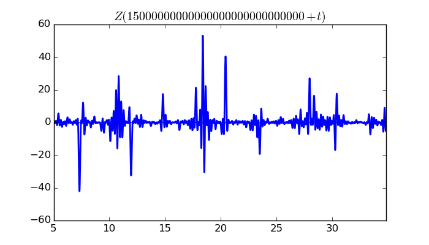
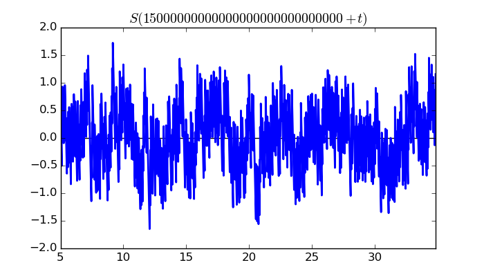
$\zeta(1/2 + it)$ around $t = 13344546663788612145413629132 \approx 1.33445466638 \times 10^{ 28 }$
Largest value of $Z(t)$ in this graph:-3328.313325
Value of $t$ for which the maximum occurs:13344546663788612145413629152.36499609
Value of $\zeta(1/2 + it)$:$961.3507601 + 3186.451679i$
Maximum of $S(t)$ in this range:-2.729606705

$\zeta(1/2 + it)$ around $t = 13303254076595736823947097592 \approx 1.33032540766 \times 10^{ 28 }$
Largest value of $Z(t)$ in this graph:-6930.159509
Value of $t$ for which the maximum occurs:13303254076595736823947097612.82299609
Value of $\zeta(1/2 + it)$:$6737.608783 + 1622.263453i$
Maximum of $S(t)$ in this range:-2.566271646
$\zeta(1/2 + it)$ around $t = 12970026600264011662238886156 \approx 1.29700266003 \times 10^{ 28 }$
Largest value of $Z(t)$ in this graph:6742.996173
Value of $t$ for which the maximum occurs:12970026600264011662238886176.23321484
Value of $\zeta(1/2 + it)$:$6508.744351 - 1761.886595i$
Maximum of $S(t)$ in this range:-2.53496703


$\zeta(1/2 + it)$ around $t = 12120513446447725601585991067 \approx 1.21205134464 \times 10^{ 28 }$
Largest value of $Z(t)$ in this graph:9693.15536
Value of $t$ for which the maximum occurs:12120513446447725601585991087.70499609
Value of $\zeta(1/2 + it)$:$9692.321503 - 127.1404945i$
Maximum of $S(t)$ in this range:2.708004134


$\zeta(1/2 + it)$ around $t = 11700045041631728214881198897 \approx 1.17000450416 \times 10^{ 28 }$
Largest value of $Z(t)$ in this graph:2837.836829
Value of $t$ for which the maximum occurs:11700045041631728214881198917.27299609
Value of $\zeta(1/2 + it)$:$-31.84193729 - 2837.658182i$
Maximum of $S(t)$ in this range:2.85520269

$\zeta(1/2 + it)$ around $t = 11580026442432493576924087042 \approx 1.15800264424 \times 10^{ 28 }$
Largest value of $Z(t)$ in this graph:2512.818012
Value of $t$ for which the maximum occurs:11580026442432493576924087062.16699609
Value of $\zeta(1/2 + it)$:$37.0354612 - 2512.545071i$
Maximum of $S(t)$ in this range:-3.237168622

$\zeta(1/2 + it)$ around $t = 10758662450340950434456735165 \approx 1.07586624503 \times 10^{ 28 }$
Largest value of $Z(t)$ in this graph:6846.918208
Value of $t$ for which the maximum occurs:10758662450340950434456735185.03201953
Value of $\zeta(1/2 + it)$:$5632.113795 - 3893.530936i$
Maximum of $S(t)$ in this range:-3.226196206

$\zeta(1/2 + it)$ around $t = 10592023098741868408218150374 \approx 1.05920230987 \times 10^{ 28 }$
Largest value of $Z(t)$ in this graph:-7810.182646
Value of $t$ for which the maximum occurs:10592023098741868408218150393.98199609
Value of $\zeta(1/2 + it)$:$7617.775286 + 1722.919807i$
Maximum of $S(t)$ in this range:2.811989315


$\zeta(1/2 + it)$ around $t = 10393735374983552009862074721 \approx 1.0393735375 \times 10^{ 28 }$
Largest value of $Z(t)$ in this graph:4737.306236
Value of $t$ for which the maximum occurs:10393735374983552009862074741.82699609
Value of $\zeta(1/2 + it)$:$3635.684281 - 3037.082512i$
Maximum of $S(t)$ in this range:-2.823033352


$\zeta(1/2 + it)$ around $t = 10251393160473423776137882251 \approx 1.02513931605 \times 10^{ 28 }$
Largest value of $Z(t)$ in this graph:-8108.704986
Value of $t$ for which the maximum occurs:10251393160473423776137882271.59532422
Value of $\zeta(1/2 + it)$:$5699.777852 + 5767.462959i$
Maximum of $S(t)$ in this range:3.166006059

$\zeta(1/2 + it)$ around $t = 10191135223869807023206505960 \approx 1.01911352239 \times 10^{ 28 }$
Largest value of $Z(t)$ in this graph:-34.9317238
Value of $t$ for which the maximum occurs:10191135223869807023206505982.50699609
Value of $\zeta(1/2 + it)$:$30.59279252 - 16.86138705i$
Maximum of $S(t)$ in this range:2.084401816
$\zeta(1/2 + it)$ around $t = 10056931281697118610033046517 \approx 1.00569312817 \times 10^{ 28 }$
Largest value of $Z(t)$ in this graph:8991.652237
Value of $t$ for which the maximum occurs:10056931281697118610033046537.85199609
Value of $\zeta(1/2 + it)$:$8976.022546 + 529.9332048i$
Maximum of $S(t)$ in this range:2.673953024


$\zeta(1/2 + it)$ around $t = 10000000000000000000000001000 \approx 1.0 \times 10^{ 28 }$
Largest value of $Z(t)$ in this graph:43.7245665
Value of $t$ for which the maximum occurs:10000000000000000000000001014.82201172
Value of $\zeta(1/2 + it)$:$36.95095938 + 23.37657623i$
Maximum of $S(t)$ in this range:-1.731371566


$\zeta(1/2 + it)$ around $t = 10000000000000000000000000960 \approx 1.0 \times 10^{ 28 }$
Largest value of $Z(t)$ in this graph:-85.00570725
Value of $t$ for which the maximum occurs:10000000000000000000000000991.86299609
Value of $\zeta(1/2 + it)$:$84.01721554 + 12.92585619i$
Maximum of $S(t)$ in this range:1.743819836


$\zeta(1/2 + it)$ around $t = 10000000000000000000000000920 \approx 1.0 \times 10^{ 28 }$
Largest value of $Z(t)$ in this graph:263.1295123
Value of $t$ for which the maximum occurs:10000000000000000000000000928.548996094
Value of $\zeta(1/2 + it)$:$212.8902123 + 154.6444237i$
Maximum of $S(t)$ in this range:1.747703799


$\zeta(1/2 + it)$ around $t = 10000000000000000000000000880 \approx 1.0 \times 10^{ 28 }$
Largest value of $Z(t)$ in this graph:67.09025324
Value of $t$ for which the maximum occurs:10000000000000000000000000882.400996094
Value of $\zeta(1/2 + it)$:$50.25310942 + 44.44915155i$
Maximum of $S(t)$ in this range:-2.182406801


$\zeta(1/2 + it)$ around $t = 10000000000000000000000000840 \approx 1.0 \times 10^{ 28 }$
Largest value of $Z(t)$ in this graph:84.61591928
Value of $t$ for which the maximum occurs:10000000000000000000000000865.94726172
Value of $\zeta(1/2 + it)$:$59.63151142 + 60.03279639i$
Maximum of $S(t)$ in this range:-1.758558634


$\zeta(1/2 + it)$ around $t = 10000000000000000000000000800 \approx 1.0 \times 10^{ 28 }$
Largest value of $Z(t)$ in this graph:128.6447034
Value of $t$ for which the maximum occurs:10000000000000000000000000837.72599609
Value of $\zeta(1/2 + it)$:$30.94500508 - 124.8673952i$
Maximum of $S(t)$ in this range:-1.862715466


$\zeta(1/2 + it)$ around $t = 10000000000000000000000000760 \approx 1.0 \times 10^{ 28 }$
Largest value of $Z(t)$ in this graph:100.4374854
Value of $t$ for which the maximum occurs:10000000000000000000000000764.441996094
Value of $\zeta(1/2 + it)$:$93.89087721 + 35.66779576i$
Maximum of $S(t)$ in this range:1.798959285
$\zeta(1/2 + it)$ around $t = 10000000000000000000000000720 \approx 1.0 \times 10^{ 28 }$
Largest value of $Z(t)$ in this graph:44.53024412
Value of $t$ for which the maximum occurs:10000000000000000000000000756.84548047
Value of $\zeta(1/2 + it)$:$39.16416284 - 21.19223891i$
Maximum of $S(t)$ in this range:-1.726287334


$\zeta(1/2 + it)$ around $t = 10000000000000000000000000680 \approx 1.0 \times 10^{ 28 }$
Largest value of $Z(t)$ in this graph:167.7062212
Value of $t$ for which the maximum occurs:10000000000000000000000000710.67737891
Value of $\zeta(1/2 + it)$:$163.3093428 + 38.15016595i$
Maximum of $S(t)$ in this range:1.820897073


$\zeta(1/2 + it)$ around $t = 10000000000000000000000000640 \approx 1.0 \times 10^{ 28 }$
Largest value of $Z(t)$ in this graph:-54.15462849
Value of $t$ for which the maximum occurs:10000000000000000000000000656.01299609
Value of $\zeta(1/2 + it)$:$54.15462729 - 0.01142650706i$
Maximum of $S(t)$ in this range:-1.995594207

$\zeta(1/2 + it)$ around $t = 10000000000000000000000000600 \approx 1.0 \times 10^{ 28 }$
Largest value of $Z(t)$ in this graph:73.35605477
Value of $t$ for which the maximum occurs:10000000000000000000000000620.22699609
Value of $\zeta(1/2 + it)$:$49.52891369 - 54.11097376i$
Maximum of $S(t)$ in this range:-1.845809569


$\zeta(1/2 + it)$ around $t = 10000000000000000000000000560 \approx 1.0 \times 10^{ 28 }$
Largest value of $Z(t)$ in this graph:-81.2537058
Value of $t$ for which the maximum occurs:10000000000000000000000000585.41337109
Value of $\zeta(1/2 + it)$:$62.40004784 - 52.04227834i$
Maximum of $S(t)$ in this range:1.940107741


$\zeta(1/2 + it)$ around $t = 10000000000000000000000000520 \approx 1.0 \times 10^{ 28 }$
Largest value of $Z(t)$ in this graph:-88.07929428
Value of $t$ for which the maximum occurs:10000000000000000000000000538.64899609
Value of $\zeta(1/2 + it)$:$87.14781884 - 12.77574861i$
Maximum of $S(t)$ in this range:-1.774546762

$\zeta(1/2 + it)$ around $t = 10000000000000000000000000480 \approx 1.0 \times 10^{ 28 }$
Largest value of $Z(t)$ in this graph:-111.9397727
Value of $t$ for which the maximum occurs:10000000000000000000000000510.91416016
Value of $\zeta(1/2 + it)$:$24.10761727 + 109.3130161i$
Maximum of $S(t)$ in this range:-1.899419353
$\zeta(1/2 + it)$ around $t = 10000000000000000000000000440 \approx 1.0 \times 10^{ 28 }$
Largest value of $Z(t)$ in this graph:-36.36142249
Value of $t$ for which the maximum occurs:10000000000000000000000000448.596152344
Value of $\zeta(1/2 + it)$:$16.87802945 - 32.2069118i$
Maximum of $S(t)$ in this range:-1.88397586


$\zeta(1/2 + it)$ around $t = 10000000000000000000000000400 \approx 1.0 \times 10^{ 28 }$
Largest value of $Z(t)$ in this graph:-78.06001337
Value of $t$ for which the maximum occurs:10000000000000000000000000429.68745703
Value of $\zeta(1/2 + it)$:$69.91543921 + 34.71594802i$
Maximum of $S(t)$ in this range:-1.853529154


$\zeta(1/2 + it)$ around $t = 10000000000000000000000000360 \approx 1.0 \times 10^{ 28 }$
Largest value of $Z(t)$ in this graph:83.8344958
Value of $t$ for which the maximum occurs:10000000000000000000000000373.98409766
Value of $\zeta(1/2 + it)$:$18.1033582 + 81.85652758i$
Maximum of $S(t)$ in this range:1.898016433


$\zeta(1/2 + it)$ around $t = 10000000000000000000000000320 \approx 1.0 \times 10^{ 28 }$
Largest value of $Z(t)$ in this graph:74.69821811
Value of $t$ for which the maximum occurs:10000000000000000000000000339.75199609
Value of $\zeta(1/2 + it)$:$39.33800735 - 63.50074777i$
Maximum of $S(t)$ in this range:-1.791340162


$\zeta(1/2 + it)$ around $t = 10000000000000000000000000280 \approx 1.0 \times 10^{ 28 }$
Largest value of $Z(t)$ in this graph:63.3587181
Value of $t$ for which the maximum occurs:10000000000000000000000000294.37643359
Value of $\zeta(1/2 + it)$:$63.34350966 + 1.388143794i$
Maximum of $S(t)$ in this range:1.938954282

$\zeta(1/2 + it)$ around $t = 10000000000000000000000000240 \approx 1.0 \times 10^{ 28 }$
Largest value of $Z(t)$ in this graph:-61.44358057
Value of $t$ for which the maximum occurs:10000000000000000000000000249.555996094
Value of $\zeta(1/2 + it)$:$50.11324921 - 35.55243797i$
Maximum of $S(t)$ in this range:1.903679777


$\zeta(1/2 + it)$ around $t = 10000000000000000000000000200 \approx 1.0 \times 10^{ 28 }$
Largest value of $Z(t)$ in this graph:-79.43794806
Value of $t$ for which the maximum occurs:10000000000000000000000000230.06099609
Value of $\zeta(1/2 + it)$:$71.74138878 + 34.11100597i$
Maximum of $S(t)$ in this range:-1.960355901


$\zeta(1/2 + it)$ around $t = 10000000000000000000000000160 \approx 1.0 \times 10^{ 28 }$
Largest value of $Z(t)$ in this graph:-45.25413641
Value of $t$ for which the maximum occurs:10000000000000000000000000184.93799609
Value of $\zeta(1/2 + it)$:$44.78273212 - 6.514888032i$
Maximum of $S(t)$ in this range:-1.599361083


$\zeta(1/2 + it)$ around $t = 10000000000000000000000000120 \approx 1.0 \times 10^{ 28 }$
Largest value of $Z(t)$ in this graph:-480.5116167
Value of $t$ for which the maximum occurs:10000000000000000000000000139.82914453
Value of $\zeta(1/2 + it)$:$184.8801747 - 443.5208392i$
Maximum of $S(t)$ in this range:-1.890637995


$\zeta(1/2 + it)$ around $t = 10000000000000000000000000080 \approx 1.0 \times 10^{ 28 }$
Largest value of $Z(t)$ in this graph:64.47512928
Value of $t$ for which the maximum occurs:10000000000000000000000000085.331996094
Value of $\zeta(1/2 + it)$:$60.34910751 - 22.69421773i$
Maximum of $S(t)$ in this range:1.910704816


$\zeta(1/2 + it)$ around $t = 10000000000000000000000000040 \approx 1.0 \times 10^{ 28 }$
Largest value of $Z(t)$ in this graph:-36.74902166
Value of $t$ for which the maximum occurs:10000000000000000000000000059.37920703
Value of $\zeta(1/2 + it)$:$11.16384707 - 35.01227087i$
Maximum of $S(t)$ in this range:-1.839476323


$\zeta(1/2 + it)$ around $t = 9999999999999999999999999980 \approx 1.0 \times 10^{ 28 }$
Largest value of $Z(t)$ in this graph:-45.62660934
Value of $t$ for which the maximum occurs:9999999999999999999999999985.290347656
Value of $\zeta(1/2 + it)$:$39.99671851 + 21.95563683i$
Maximum of $S(t)$ in this range:-1.884375111


$\zeta(1/2 + it)$ around $t = 9403885503382820410724025970 \approx 9.40388550338 \times 10^{ 27 }$
Largest value of $Z(t)$ in this graph:4506.746989
Value of $t$ for which the maximum occurs:9403885503382820410724025990.05099609
Value of $\zeta(1/2 + it)$:$2961.923402 + 3396.730513i$
Maximum of $S(t)$ in this range:2.795603318


$\zeta(1/2 + it)$ around $t = 8513462154860685687407505849 \approx 8.51346215486 \times 10^{ 27 }$
Largest value of $Z(t)$ in this graph:5342.78595
Value of $t$ for which the maximum occurs:8513462154860685687407505869.04012891
Value of $\zeta(1/2 + it)$:$4392.484169 - 3041.618735i$
Maximum of $S(t)$ in this range:2.617895445


$\zeta(1/2 + it)$ around $t = 8003262835021551218601182764 \approx 8.00326283502 \times 10^{ 27 }$
Largest value of $Z(t)$ in this graph:7544.091014
Value of $t$ for which the maximum occurs:8003262835021551218601182784.15308203
Value of $\zeta(1/2 + it)$:$7539.257335 + 270.0149201i$
Maximum of $S(t)$ in this range:-2.942957174


$\zeta(1/2 + it)$ around $t = 7757304990367861417150213034 \approx 7.75730499037 \times 10^{ 27 }$
Largest value of $Z(t)$ in this graph:-4629.47999
Value of $t$ for which the maximum occurs:7757304990367861417150213054.05932422
Value of $\zeta(1/2 + it)$:$3989.521504 + 2348.574707i$
Maximum of $S(t)$ in this range:3.345544387


$\zeta(1/2 + it)$ around $t = 6263430629274347712240701152 \approx 6.26343062927 \times 10^{ 27 }$
Largest value of $Z(t)$ in this graph:3840.750052
Value of $t$ for which the maximum occurs:6263430629274347712240701172.49010547
Value of $\zeta(1/2 + it)$:$1332.151225 - 3602.323427i$
Maximum of $S(t)$ in this range:-2.851351612


$\zeta(1/2 + it)$ around $t = 6254933453662363975765313786 \approx 6.25493345366 \times 10^{ 27 }$
Largest value of $Z(t)$ in this graph:5901.508468
Value of $t$ for which the maximum occurs:6254933453662363975765313806.01899609
Value of $\zeta(1/2 + it)$:$5713.456011 + 1477.911572i$
Maximum of $S(t)$ in this range:2.54751136


$\zeta(1/2 + it)$ around $t = 5534453662630304774681440886 \approx 5.53445366263 \times 10^{ 27 }$
Largest value of $Z(t)$ in this graph:-9286.328816
Value of $t$ for which the maximum occurs:5534453662630304774681440906.48629297
Value of $\zeta(1/2 + it)$:$9286.321387 - 11.74639594i$
Maximum of $S(t)$ in this range:2.800666988


$\zeta(1/2 + it)$ around $t = 5362422975747867922462600280 \approx 5.36242297575 \times 10^{ 27 }$
Largest value of $Z(t)$ in this graph:5095.032258
Value of $t$ for which the maximum occurs:5362422975747867922462600300.25599609
Value of $\zeta(1/2 + it)$:$4977.485298 - 1088.1148i$
Maximum of $S(t)$ in this range:2.639286736


$\zeta(1/2 + it)$ around $t = 4925292433707958301653807375 \approx 4.92529243371 \times 10^{ 27 }$
Largest value of $Z(t)$ in this graph:-7139.264328
Value of $t$ for which the maximum occurs:4925292433707958301653807395.99399609
Value of $\zeta(1/2 + it)$:$6380.450717 - 3202.9586i$
Maximum of $S(t)$ in this range:-2.640701504


$\zeta(1/2 + it)$ around $t = 4748715546296244024878115374 \approx 4.7487155463 \times 10^{ 27 }$
Largest value of $Z(t)$ in this graph:-1919.907123
Value of $t$ for which the maximum occurs:4748715546296244024878115394.74548828
Value of $\zeta(1/2 + it)$:$-441.5164282 + 1868.450321i$
Maximum of $S(t)$ in this range:2.800692957

$\zeta(1/2 + it)$ around $t = 4654736008281282611692479701 \approx 4.65473600828 \times 10^{ 27 }$
Largest value of $Z(t)$ in this graph:-1766.68074
Value of $t$ for which the maximum occurs:4654736008281282611692479721.64699609
Value of $\zeta(1/2 + it)$:$1286.787612 + 1210.51166i$
Maximum of $S(t)$ in this range:2.188287075

$\zeta(1/2 + it)$ around $t = 3118860705463931156579181296 \approx 3.11886070546 \times 10^{ 27 }$
Largest value of $Z(t)$ in this graph:-4358.472865
Value of $t$ for which the maximum occurs:3118860705463931156579181316.83699609
Value of $\zeta(1/2 + it)$:$2722.708067 + 3403.402194i$
Maximum of $S(t)$ in this range:-2.792323862


$\zeta(1/2 + it)$ around $t = 2577265475314397560786796768 \approx 2.57726547531 \times 10^{ 27 }$
Largest value of $Z(t)$ in this graph:5583.590325
Value of $t$ for which the maximum occurs:2577265475314397560786796788.80499609
Value of $\zeta(1/2 + it)$:$5341.279537 - 1627.026069i$
Maximum of $S(t)$ in this range:-3.060106638

$\zeta(1/2 + it)$ around $t = 1822611993446349552686699337 \approx 1.82261199345 \times 10^{ 27 }$
Largest value of $Z(t)$ in this graph:-6538.083649
Value of $t$ for which the maximum occurs:1822611993446349552686699357.27743359
Value of $\zeta(1/2 + it)$:$5960.419601 - 2686.993856i$
Maximum of $S(t)$ in this range:-2.753606331


$\zeta(1/2 + it)$ around $t = 1704907248754387488617281720 \approx 1.70490724875 \times 10^{ 27 }$
Largest value of $Z(t)$ in this graph:3197.306815
Value of $t$ for which the maximum occurs:1704907248754387488617281740.30915234
Value of $\zeta(1/2 + it)$:$-450.6252113 + 3165.392201i$
Maximum of $S(t)$ in this range:3.071828039


$\zeta(1/2 + it)$ around $t = 1436161885496321078553725637 \approx 1.4361618855 \times 10^{ 27 }$
Largest value of $Z(t)$ in this graph:873.6024904
Value of $t$ for which the maximum occurs:1436161885496321078553725657.08512891
Value of $\zeta(1/2 + it)$:$381.5845992 + 785.8590871i$
Maximum of $S(t)$ in this range:-2.01736117


$\zeta(1/2 + it)$ around $t = 1318154903525163342711783989 \approx 1.31815490353 \times 10^{ 27 }$
Largest value of $Z(t)$ in this graph:5346.192835
Value of $t$ for which the maximum occurs:1318154903525163342711784009.59610547
Value of $\zeta(1/2 + it)$:$3934.242559 + 3619.877528i$
Maximum of $S(t)$ in this range:3.132075425


$\zeta(1/2 + it)$ around $t = 1057983951339984806752281456 \approx 1.05798395134 \times 10^{ 27 }$
Largest value of $Z(t)$ in this graph:-44.14298854
Value of $t$ for which the maximum occurs:1057983951339984806752281491.12999609
Value of $\zeta(1/2 + it)$:$40.58103524 - 17.37190308i$
Maximum of $S(t)$ in this range:1.865800682


$\zeta(1/2 + it)$ around $t = 1000000000000000000000000000 \approx 1.0 \times 10^{ 27 }$
Largest value of $Z(t)$ in this graph:44.50873721
Value of $t$ for which the maximum occurs:1000000000000000000000000016.25114453
Value of $\zeta(1/2 + it)$:$36.87807286 + 24.92058246i$
Maximum of $S(t)$ in this range:1.844120883


$\zeta(1/2 + it)$ around $t = 999999999999999999999999980 \approx 1.0 \times 10^{ 27 }$
Largest value of $Z(t)$ in this graph:44.50872324
Value of $t$ for which the maximum occurs:1000000000000000000000000016.25114453
Value of $\zeta(1/2 + it)$:$36.87806129 + 24.92057463i$
Maximum of $S(t)$ in this range:1.844120883

$\zeta(1/2 + it)$ around $t = 942600889662841706196709735 \approx 9.42600889663 \times 10^{ 26 }$
Largest value of $Z(t)$ in this graph:-5620.451743
Value of $t$ for which the maximum occurs:942600889662841706196709755.75720703
Value of $\zeta(1/2 + it)$:$5620.080025 - 64.63976716i$
Maximum of $S(t)$ in this range:-2.840878435


$\zeta(1/2 + it)$ around $t = 927337179262222573568282034 \approx 9.27337179262 \times 10^{ 26 }$
Largest value of $Z(t)$ in this graph:6084.129673
Value of $t$ for which the maximum occurs:927337179262222573568282054.17299609
Value of $\zeta(1/2 + it)$:$5949.823082 - 1271.313956i$
Maximum of $S(t)$ in this range:-2.710114914


$\zeta(1/2 + it)$ around $t = 891210424622870710406880313 \approx 8.91210424623 \times 10^{ 26 }$
Largest value of $Z(t)$ in this graph:6661.200376
Value of $t$ for which the maximum occurs:891210424622870710406880333.87015234
Value of $\zeta(1/2 + it)$:$6248.227203 - 2308.949388i$
Maximum of $S(t)$ in this range:2.862778276


$\zeta(1/2 + it)$ around $t = 635664531807716697720912136 \approx 6.35664531808 \times 10^{ 26 }$
Largest value of $Z(t)$ in this graph:5682.913025
Value of $t$ for which the maximum occurs:635664531807716697720912156.05499609
Value of $\zeta(1/2 + it)$:$5651.098774 + 600.4857124i$
Maximum of $S(t)$ in this range:-2.64228901


$\zeta(1/2 + it)$ around $t = 402290922598837103741152415 \approx 4.02290922599 \times 10^{ 26 }$
Largest value of $Z(t)$ in this graph:-6156.224428
Value of $t$ for which the maximum occurs:402290922598837103741152435.51599609
Value of $\zeta(1/2 + it)$:$5767.122619 + 2153.925696i$
Maximum of $S(t)$ in this range:2.757685044


$\zeta(1/2 + it)$ around $t = 315612663867176119044850595 \approx 3.15612663867 \times 10^{ 26 }$
Largest value of $Z(t)$ in this graph:2067.260635
Value of $t$ for which the maximum occurs:315612663867176119044850615.02499609
Value of $\zeta(1/2 + it)$:$1248.882343 + 1647.379564i$
Maximum of $S(t)$ in this range:2.453660576


$\zeta(1/2 + it)$ around $t = 176658449390840669411619064 \approx 1.76658449391 \times 10^{ 26 }$
Largest value of $Z(t)$ in this graph:-3598.466288
Value of $t$ for which the maximum occurs:176658449390840669411619084.44699609
Value of $\zeta(1/2 + it)$:$3596.464181 - 120.0208985i$
Maximum of $S(t)$ in this range:2.786266692


$\zeta(1/2 + it)$ around $t = 144642763355598545071718264 \approx 1.44642763356 \times 10^{ 26 }$
Largest value of $Z(t)$ in this graph:-5785.469864
Value of $t$ for which the maximum occurs:144642763355598545071718284.51424609
Value of $\zeta(1/2 + it)$:$5764.51961 + 491.9097552i$
Maximum of $S(t)$ in this range:-2.418905735


$\zeta(1/2 + it)$ around $t = 134032020307222475497920429 \approx 1.34032020307 \times 10^{ 26 }$
Largest value of $Z(t)$ in this graph:513.8356538
Value of $t$ for which the maximum occurs:134032020307222475497920449.44699609
Value of $\zeta(1/2 + it)$:$287.5220899 + 425.8616289i$
Maximum of $S(t)$ in this range:2.003191169


$\zeta(1/2 + it)$ around $t = 134032020307222475497920429 \approx 1.34032020307 \times 10^{ 26 }$
Largest value of $Z(t)$ in this graph:513.8356594
Value of $t$ for which the maximum occurs:134032020307222475497920449.44699609
Value of $\zeta(1/2 + it)$:$287.522093 + 425.8616336i$
Maximum of $S(t)$ in this range:2.003195135
$\zeta(1/2 + it)$ around $t = 109990955615748542241920601 \approx 1.09990955616 \times 10^{ 26 }$
Largest value of $Z(t)$ in this graph:-57.22646044
Value of $t$ for which the maximum occurs:109990955615748542241920629.19799609
Value of $\zeta(1/2 + it)$:$52.04489144 + 23.79489546i$
Maximum of $S(t)$ in this range:1.943736068


$\zeta(1/2 + it)$ around $t = 100000000000000000000000000 \approx 1.0 \times 10^{ 26 }$
Largest value of $Z(t)$ in this graph:-82.69874656
Value of $t$ for which the maximum occurs:100000000000000000000000021.84416016
Value of $\zeta(1/2 + it)$:$63.35279613 - 53.155488i$
Maximum of $S(t)$ in this range:-1.881152582


$\zeta(1/2 + it)$ around $t = 100000000000000000000000000 \approx 1.0 \times 10^{ 26 }$
Largest value of $Z(t)$ in this graph:-82.69877147
Value of $t$ for which the maximum occurs:100000000000000000000000021.84416016
Value of $\zeta(1/2 + it)$:$63.35281522 - 53.15550402i$
Maximum of $S(t)$ in this range:-1.881144126
$\zeta(1/2 + it)$ around $t = 87306993010789635412817109 \approx 8.73069930108 \times 10^{ 25 }$
Largest value of $Z(t)$ in this graph:-6096.657003
Value of $t$ for which the maximum occurs:87306993010789635412817129.33499609
Value of $\zeta(1/2 + it)$:$6085.621676 - 366.6543693i$
Maximum of $S(t)$ in this range:-2.681665962


$\zeta(1/2 + it)$ around $t = 78028717949218948398892829 \approx 7.80287179492 \times 10^{ 25 }$
Largest value of $Z(t)$ in this graph:-5381.325141
Value of $t$ for which the maximum occurs:78028717949218948398892849.87417578
Value of $\zeta(1/2 + it)$:$4965.234181 + 2074.875851i$
Maximum of $S(t)$ in this range:-2.873251972


$\zeta(1/2 + it)$ around $t = 70489037205504571213437297 \approx 7.04890372055 \times 10^{ 25 }$
Largest value of $Z(t)$ in this graph:-4408.784258
Value of $t$ for which the maximum occurs:70489037205504571213437317.59248047
Value of $\zeta(1/2 + it)$:$4390.867934 + 397.0609783i$
Maximum of $S(t)$ in this range:-2.668383912


$\zeta(1/2 + it)$ around $t = 29578578192128169431279180 \approx 2.95785781921 \times 10^{ 25 }$
Largest value of $Z(t)$ in this graph:-4876.084058
Value of $t$ for which the maximum occurs:29578578192128169431279200.87824609
Value of $\zeta(1/2 + it)$:$3942.70957 + 2869.013243i$
Maximum of $S(t)$ in this range:2.982978869


$\zeta(1/2 + it)$ around $t = 24532899970195222005100520 \approx 2.45328999702 \times 10^{ 25 }$
Largest value of $Z(t)$ in this graph:5383.469188
Value of $t$ for which the maximum occurs:24532899970195222005100540.57099609
Value of $\zeta(1/2 + it)$:$5040.940346 + 1889.619254i$
Maximum of $S(t)$ in this range:2.753116739

$\zeta(1/2 + it)$ around $t = 23802140526527201673110276 \approx 2.38021405265 \times 10^{ 25 }$
Largest value of $Z(t)$ in this graph:5262.394123
Value of $t$ for which the maximum occurs:23802140526527201673110296.87499609
Value of $\zeta(1/2 + it)$:$5261.749713 + 82.35207828i$
Maximum of $S(t)$ in this range:2.940815275


$\zeta(1/2 + it)$ around $t = 12635936398857856895456726 \approx 1.26359363989 \times 10^{ 25 }$
Largest value of $Z(t)$ in this graph:-5095.028872
Value of $t$ for which the maximum occurs:12635936398857856895456746.26499609
Value of $\zeta(1/2 + it)$:$4781.931171 + 1758.537314i$
Maximum of $S(t)$ in this range:2.96365875


$\zeta(1/2 + it)$ around $t = 11452628915113964213507107 \approx 1.14526289151 \times 10^{ 25 }$
Largest value of $Z(t)$ in this graph:77.06664963
Value of $t$ for which the maximum occurs:11452628915113964213507127.06699609
Value of $\zeta(1/2 + it)$:$72.27988639 + 26.73736166i$
Maximum of $S(t)$ in this range:1.77545664


$\zeta(1/2 + it)$ around $t = 11229291116427626887289363 \approx 1.12292911164 \times 10^{ 25 }$
Largest value of $Z(t)$ in this graph:3990.095783
Value of $t$ for which the maximum occurs:11229291116427626887289383.83699609
Value of $\zeta(1/2 + it)$:$3314.339402 - 2221.715258i$
Maximum of $S(t)$ in this range:2.767821034


$\zeta(1/2 + it)$ around $t = 10121598453421191913984785 \approx 1.01215984534 \times 10^{ 25 }$
Largest value of $Z(t)$ in this graph:-4474.450571
Value of $t$ for which the maximum occurs:10121598453421191913984805.62917578
Value of $\zeta(1/2 + it)$:$4361.062124 - 1000.922108i$
Maximum of $S(t)$ in this range:-2.749068424


$\zeta(1/2 + it)$ around $t = 8172034382195424085769738 \approx 8.1720343822 \times 10^{ 24 }$
Largest value of $Z(t)$ in this graph:2838.281498
Value of $t$ for which the maximum occurs:8172034382195424085769758.54246484
Value of $\zeta(1/2 + it)$:$1774.330419 - 2215.308878i$
Maximum of $S(t)$ in this range:2.635102009


$\zeta(1/2 + it)$ around $t = 1378580047424597442940433 \approx 1.37858004742 \times 10^{ 24 }$
Largest value of $Z(t)$ in this graph:3615.445961
Value of $t$ for which the maximum occurs:1378580047424597442940453.45599609
Value of $\zeta(1/2 + it)$:$3578.992478 + 512.1155537i$
Maximum of $S(t)$ in this range:-2.706005852


$\zeta(1/2 + it)$ around $t = 1194479330178301585147851 \approx 1.19447933018 \times 10^{ 24 }$
Largest value of $Z(t)$ in this graph:-61.84145705
Value of $t$ for which the maximum occurs:1194479330178301585147883.15699609
Value of $\zeta(1/2 + it)$:$55.48308711 - 27.31286976i$
Maximum of $S(t)$ in this range:1.880096268


$\zeta(1/2 + it)$ around $t = 1000000000000000000000000 \approx 1.0 \times 10^{ 24 }$
Largest value of $Z(t)$ in this graph:61.64463104
Value of $t$ for which the maximum occurs:1000000000000000000000007.131019531
Value of $\zeta(1/2 + it)$:$49.45205971 + 36.80427049i$
Maximum of $S(t)$ in this range:-2.089559359